Chapter 12: Linear Regression and Correlation¶
Introduction¶
Chapter Outline: Chapter Objectives
By the end of this chapter, the student should be able to:
- Discuss basic ideas of linear regression and correlation.
- Create and interpret a line of best fit.
- Calculate and interpret the correlation coefficient.
- Calculate and interpret outliers.
Professionals often want to know how two or more numeric variables are related. For example, is there a relationship between the grade on the second math exam a student takes and the grade on the final exam? If there is a relationship, what is the relationship and how strong is it?
In another example, your income may be determined by your education, your profession, your years of experience, and your ability. The amount you pay a repair person for labor is often determined by an initial amount plus an hourly fee.
The type of data described in the examples is bivariate data — "bi" for two variables. In reality, statisticians use multivariate data, meaning many variables.
In this chapter, you will be studying the simplest form of regression, "linear regression" with one independent variable (x). This involves data that fits a line in two dimensions. You will also study correlation which measures how strong the relationship is.
12.1 Linear Equations¶
Linear regression for two variables is based on a linear equation with one independent variable. The equation has the form:
where a and b are constant numbers.
The variable x is the independent variable, and y is the dependent variable. Typically, you choose a value to substitute for the independent variable and then solve for the dependent variable.
Example 12.1
The following examples are linear equations.
Try It
Is the following an example of a linear equation?
y = –0.125 – 3.5x
The graph of a linear equation of the form y = a + bx is a straight line. Any line that is not vertical can be described by this equation.
Example 12.2
Graph the equation y = –1 + 2x.
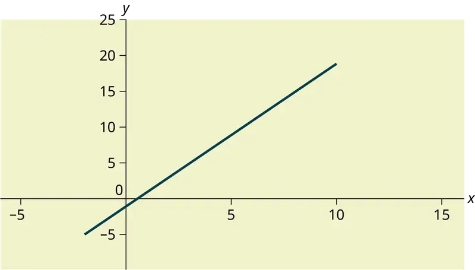
Try It
Is the following an example of a linear equation? Why or why not?
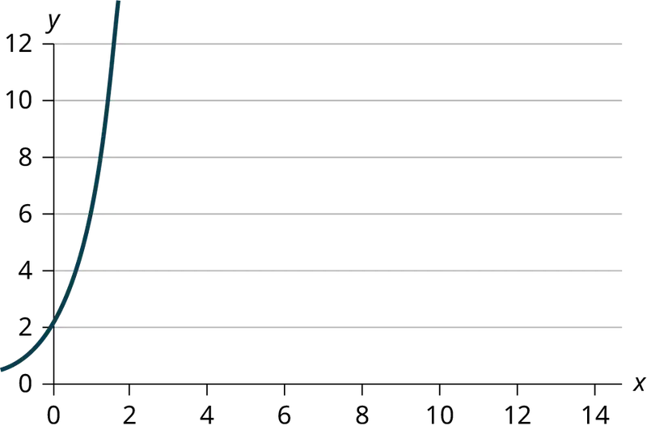
Example 12.3
A local small business completes federal tax returns for customers. The rate for services is $32 per hour plus a $31.50 one-time charge. The total cost to a customer depends on the number of hours it takes to complete the job.
Find the equation that expresses the total cost in terms of the number of hours required to complete the job.
Solution
Let x = the number of hours it takes to get the job done.
Let y = the total cost to the customer.
The $31.50 is a fixed cost. If it takes x hours to complete the tax return, then (32)(x) is the cost of the tax return processing only. The total cost is: y = 31.50 + 32x
Try It
Emma’s Extreme Sports hires hang-gliding instructors and pays them a fee of $50 per class as well as $20 per student in the class. The total cost Emma pays depends on the number of students in a class. Find the equation that expresses the total cost in terms of the number of students in a class.
Slope and Y-Intercept of a Linear Equation¶
For the linear equation y = a + bx, b = slope and a = y-intercept. From algebra recall that the slope is a number that describes the steepness of a line, and the y-intercept is the y coordinate of the point (0, a) where the line crosses the y-axis.
Example 12.4
Svetlana tutors to make extra money for college. For each tutoring session, she charges a one-time fee of $25 plus $15 per hour of tutoring. A linear equation that expresses the total amount of money Svetlana earns for each session she tutors is y = 25 + 15x.
What are the independent and dependent variables? What is the y-intercept and what is the slope? Interpret them using complete sentences.
Solution
The independent variable (x) is the number of hours Svetlana tutors each session. The dependent variable (y) is the amount, in dollars, Svetlana earns for each session.
The y-intercept is 25 (a = 25). At the start of the tutoring session, Svetlana charges a one-time fee of $25 (this is when x = 0). The slope is 15 (b = 15). For each session, Svetlana earns $15 for each hour she tutors.
Try It
Ethan repairs household appliances like dishwashers and refrigerators. For each visit, he charges $25 plus $20 per hour of work. A linear equation that expresses the total amount of money Ethan earns per visit is y = 25 + 20x.
What are the independent and dependent variables? What is the y-intercept and what is the slope? Interpret them using complete sentences.
12.2 Scatter Plots¶
Before we take up the discussion of linear regression and correlation, we need to examine a way to display the relation between two variables x and y. The most common and easiest way is a scatter plot. The following example illustrates a scatter plot.
Example 12.5
An educational researcher collects data on the vocabulary size of children as a function of age. The data is shown in Table 12.1. Is there a relationship between age and vocabulary size for young children? Construct a scatter plot. Let x = Child’s Age, and let y = Vocabulary Size.
Table 12.1
| Age (years) | Vocabulary Size (number of words) |
|---|---|
| 3 | 655 |
| 4 | 1098 |
| 6 | 2463 |
| 7 | 3195 |
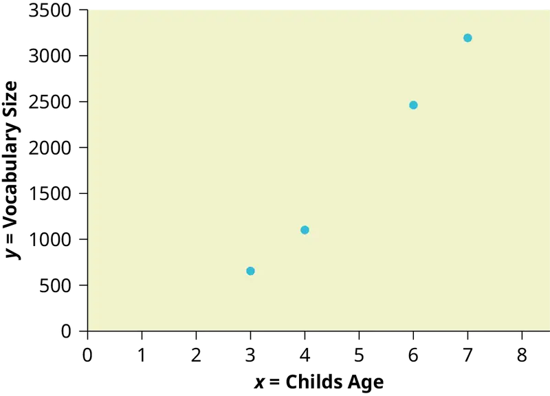
Using the Calculator
To create a scatter plot:
- Enter your X data into list L1 and your Y data into list L2.
- Press 2nd
STATPLOT ENTERto use Plot 1. On the input screen for PLOT 1, highlight On and pressENTER. (Make sure the other plots are OFF.) - For TYPE: highlight the very first icon, which is the scatter plot, and press
ENTER. - For Xlist:, enter
L1ENTER and for Ylist:L2ENTER. - For Mark: it does not matter which symbol you highlight, but the square is the easiest to see. Press
ENTER. - Make sure there are no other equations that could be plotted. Press Y = and clear any equations out.
- Press the
ZOOMkey and then the number 9 (for menu item "ZoomStat") ; the calculator will fit the window to the data. You can press WINDOW to see the scaling of the axes.
Try It
Amelia plays basketball for her high school. She wants to improve to play at the college level. She notices that the number of points she scores in a game goes up in response to the number of hours she practices her jump shot each week. She records the following data:
Table 12.2
| X (hours practicing jump shot) | Y (points scored in a game) |
|---|---|
| 5 | 15 |
| 7 | 22 |
| 9 | 28 |
| 10 | 31 |
| 11 | 33 |
| 12 | 36 |
Construct a scatter plot and state if what Amelia thinks appears to be true.
A scatter plot shows the direction of a relationship between the variables. A clear direction happens when there is either:
- High values of one variable occurring with high values of the other variable or low values of one variable occurring with low values of the other variable.
- High values of one variable occurring with low values of the other variable.
You can determine the strength of the relationship by looking at the scatter plot and seeing how close the points are to a line, a power function, an exponential function, or to some other type of function. For a linear relationship there is an exception. Consider a scatter plot where all the points fall on a horizontal line providing a "perfect fit." The horizontal line would in fact show no relationship.
When you look at a scatterplot, you want to notice the overall pattern and any deviations from the pattern. The following scatterplot examples illustrate these concepts.
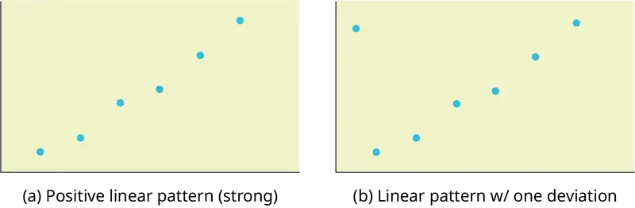
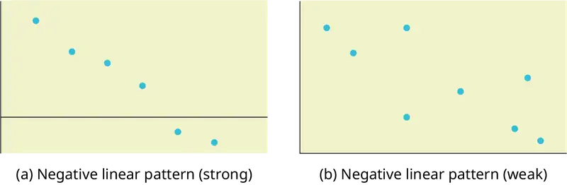
In this chapter, we are interested in scatter plots that show a linear pattern. Linear patterns are quite common. The linear relationship is strong if the points are close to a straight line, except in the case of a horizontal line where there is no relationship. If we think that the points show a linear relationship, we would like to draw a line on the scatter plot. This line can be calculated through a process called linear regression. However, we only calculate a regression line if one of the variables helps to explain or predict the other variable. If x is the independent variable and y the dependent variable, then we can use a regression line to predict y for a given value of x
12.3 The Regression Equation¶
Data rarely fit a straight line exactly. Usually, you must be satisfied with rough predictions. Typically, you have a set of data whose scatter plot appears to "fit" a straight line. This is called a Line of Best Fit or Least-Squares Line.
Collaborative Exercise
If you know a person's pinky (smallest) finger length, do you think you could predict that person's height? Collect data from your class (pinky finger length, in inches). The independent variable, x, is pinky finger length and the dependent variable, y, is height. For each set of data, plot the points on graph paper. Make your graph big enough and use a ruler. Then "by eye" draw a line that appears to "fit" the data. For your line, pick two convenient points and use them to find the slope of the line. Find the y-intercept of the line by extending your line so it crosses the y-axis. Using the slopes and the y-intercepts, write your equation of "best fit." Do you think everyone will have the same equation? Why or why not? According to your equation, what is the predicted height for a pinky length of 2.5 inches?
Example 12.6
A random sample of 11 statistics students produced the following data, where x is the third exam score out of 80, and y is the final exam score out of 200. Can you predict the final exam score of a random student if you know the third exam score?
Table 12.3 Table showing the scores on the final exam based on scores from the third exam.
| x (third exam score) | y (final exam score) |
|---|---|
| 65 | 175 |
| 67 | 133 |
| 71 | 185 |
| 71 | 163 |
| 66 | 126 |
| 75 | 198 |
| 67 | 153 |
| 70 | 163 |
| 71 | 159 |
| 69 | 151 |
| 69 | 159 |
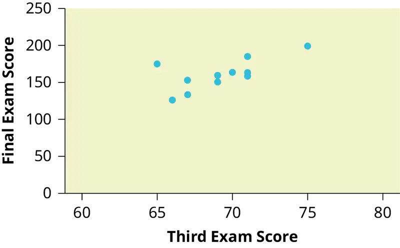
Try It
SCUBA divers have maximum dive times they cannot exceed when going to different depths. The data in Table 12.4 show different depths with the maximum dive times in minutes. Use your calculator to find the least squares regression line and predict the maximum dive time for 110 feet.
Table 12.4
| X (depth in feet) | Y (maximum dive time) |
|---|---|
| 50 | 80 |
| 60 | 55 |
| 70 | 45 |
| 80 | 35 |
| 90 | 25 |
| 100 | 22 |
The third exam score, x, is the independent variable and the final exam score, y, is the dependent variable. We will plot a regression line that best "fits" the data. If each of you were to fit a line "by eye," you would draw different lines. We can use what is called a least-squares regression line to obtain the best fit line.
Consider the following diagram. Each point of data is of the the form (x, y) and each point of the line of best fit using least-squares linear regression has the form (x, ŷ).
The ŷ is read "y hat" and is the estimated value of y. It is the value of y obtained using the regression line. It is not generally equal to y from data.
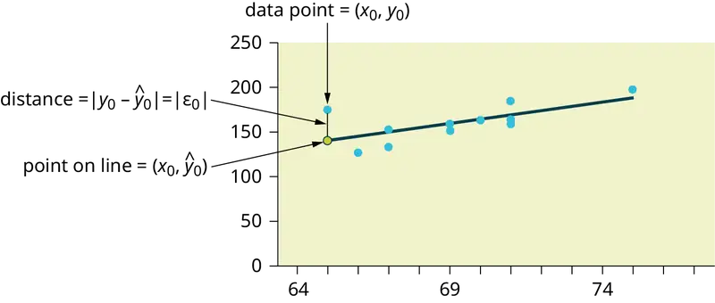
The term y0 – ŷ0 = ε0 is called the "error" or residual. It is not an error in the sense of a mistake. The absolute value of a residual measures the vertical distance between the actual value of y and the estimated value of y. In other words, it measures the vertical distance between the actual data point and the predicted point on the line.
If the observed data point lies above the line, the residual is positive, and the line underestimates the actual data value for y. If the observed data point lies below the line, the residual is negative, and the line overestimates that actual data value for y.
In the diagram in Figure 12.10, y0 – ŷ0 = ε0 is the residual for the point shown. Here the point lies above the line and the residual is positive.
ε = the Greek letter epsilon
For each data point, you can calculate the residuals or errors, yi - ŷi = εi for i = 1, 2, 3, ..., 11.
Each |ε| is a vertical distance.
For the example about the third exam scores and the final exam scores for the 11 statistics students, there are 11 data points. Therefore, there are 11 ε values. If you square each ε and add, you get
This is called the Sum of Squared Errors (SSE).
Using calculus, you can determine the values of a and b that make the SSE a minimum. When you make the SSE a minimum, you have determined the points that are on the line of best fit. It turns out that the line of best fit has the equation:
where \(a=\bar{y}-b\bar{x}\) and \(b=\frac{\Sigma(x-\bar{x})(y-\bar{y})}{\Sigma{(x-\bar{x})}^{2}}\).
The sample means of the x values and the y values are \(\bar{x}\) and \(\bar{y}\), respectively. The best fit line always passes through the point \((\bar{x},\bar{y})\).
The slope b can be written as \(b=r\left( \frac{s_{y}}{s_{x}} \right)\) where sy = the standard deviation of the y values and sx = the standard deviation of the x values. r is the correlation coefficient, which is discussed in the next section.
Residuals Plots¶
A residuals plot can be used to help determine if a set of (x, y) data is linearly correlated. For each data point used to create the correlation line, a residual y - ŷ can be calculated, where y is the observed value of the response variable and ŷ is the value predicted by the correlation line. The difference between these values is called the residual. A residuals plot shows the explanatory variable x on the horizontal axis and the residual for that value on the vertical axis. The residuals plot is often shown together with a scatter plot of the data. While a scatter plot of the data should resemble a straight line, a residuals plot should appear random, with no pattern and no outliers. It should also show constant error variance, meaning the residuals should not consistently increase (or decrease) as the explanatory variable x increases.
A residuals plot can be created using StatCrunch or a TI calculator. The plot should appear random. A box plot of the residuals is also helpful to verify that there are no outliers in the data. By observing the scatter plot of the data, the residuals plot, and the box plot of residuals, together with the linear correlation coefficient, we can usually determine if it is reasonable to conclude that the data are linearly correlated.
Example:¶
A shop owner uses a straight-line regression to estimate the number of ice cream cones that would be sold in a day based on the temperature at noon. The owner has data for a 2-year period and chose nine days at random. A scatter plot of the data is shown, together with a residuals plot.
Table 12.5 Table showing the number of ice cream cones sold on nine random days and the temperature at noon on those days.
| Temperature ° F | Ice cream cones sold |
|---|---|
| 70 | 105 |
| 85 | 240 |
| 65 | 49 |
| 72 | 147 |
| 80 | 231 |
| 61 | 38 |
| 75 | 193 |
| 78 | 196 |
| 68 | 89 |
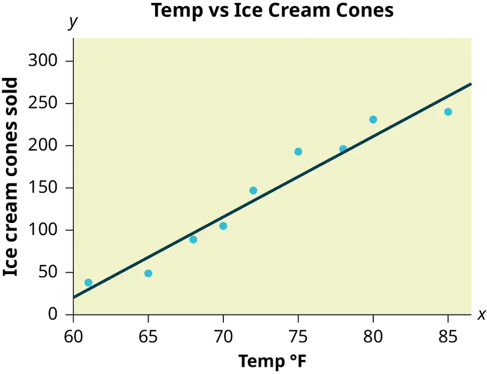
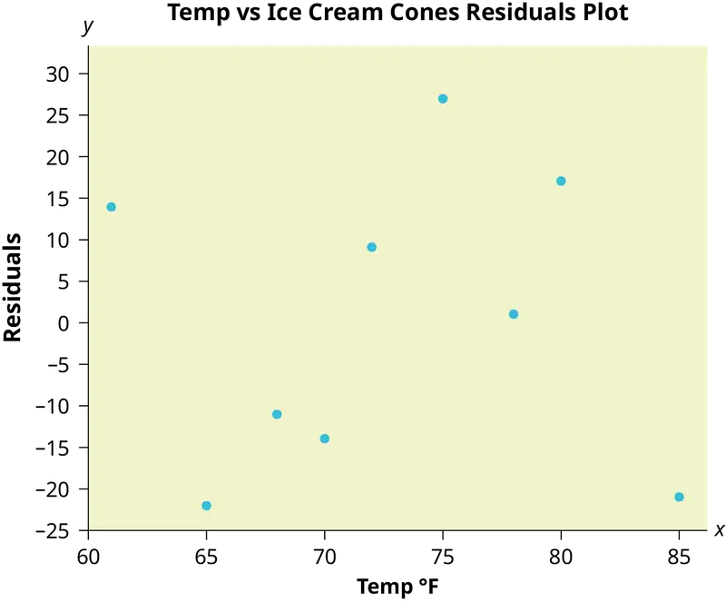
Least Squares Criteria for Best Fit¶
The process of fitting the best-fit line is called linear regression. The idea behind finding the best-fit line is based on the assumption that the data are scattered about a straight line. The criteria for the best fit line is that the sum of the squared errors (SSE) is minimized, that is, made as small as possible. Any other line you might choose would have a higher SSE than the best fit line. This best fit line is called the least-squares regression line .
NOTE
Computer spreadsheets, statistical software, and many calculators can quickly calculate the best-fit line and create the graphs. The calculations tend to be tedious if done by hand. Instructions to use the TI-83, TI-83+, and TI-84+ calculators to find the best-fit line and create a scatterplot are shown at the end of this section.
THIRD EXAM vs FINAL EXAM EXAMPLE:
The graph of the line of best fit for the third-exam/final-exam example is as follows:
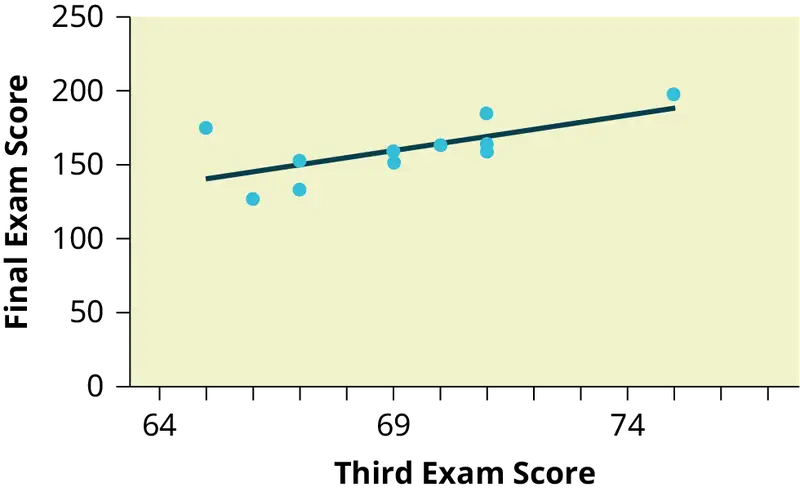
The least squares regression line (best-fit line) for the third-exam/final-exam example has the equation:
REMINDER
Remember, it is always important to plot a scatter diagram first. If the scatter plot indicates that there is a linear relationship between the variables, then it is reasonable to use a best fit line to make predictions for y given x within the domain of x-values in the sample data, but not necessarily for x-values outside that domain. You could use the line to predict the final exam score for a student who earned a grade of 73 on the third exam. You should NOT use the line to predict the final exam score for a student who earned a grade of 50 on the third exam, because 50 is not within the domain of the x-values in the sample data, which are between 65 and 75.
Understanding Slope¶
The slope of the line, b, describes how changes in the variables are related. It is important to interpret the slope of the line in the context of the situation represented by the data. You should be able to write a sentence interpreting the slope in plain English.
INTERPRETATION OF THE SLOPE: The slope of the best-fit line tells us how the dependent variable (y) changes for every one unit increase in the independent (x) variable, on average.
THIRD EXAM vs FINAL EXAM EXAMPLE
Slope: The slope of the line is b = 4.83.
Interpretation: For a one-point increase in the score on the third exam, the final exam score increases by 4.83 points, on average.
Using the Calculator
Using the Linear Regression T Test: LinRegTTest
- In the
STATlist editor, enter the X data in listL1and the Y data in listL2, paired so that the corresponding (x,y) values are next to each other in the lists. (If a particular pair of values is repeated, enter it as many times as it appears in the data.) - On the
STAT TESTSmenu, scroll down with the cursor to select theLinRegTTest. (Be careful to selectLinRegTTest, as some calculators may also have a different item called LinRegTInt.) - On the LinRegTTest input screen enter: Xlist: L1 ; Ylist: L2 ; Freq: 1
- On the next line, at the prompt β or ρ, highlight "≠ 0" and press ENTER
- Leave the line for "RegEq:" blank
- Highlight Calculate and press ENTER.
The output screen contains a lot of information. For now we will focus on a few items from the output, and will return later to the other items.
The second line says y = a + bx. Scroll down to find the values a = –173.513, and b = 4.8273; the equation of the best fit line is ŷ = –173.51 + 4.83x
The two items at the bottom are r2 = 0.43969 and r = 0.663. For now, just note where to find these values; we will discuss them in the next two sections.
Graphing the Scatterplot and Regression Line
- We are assuming your X data is already entered in list L1 and your Y data is in list L2
- Press 2nd STATPLOT ENTER to use Plot 1
- On the input screen for PLOT 1, highlight On, and press ENTER
- For TYPE: highlight the very first icon which is the scatterplot and press ENTER
- Indicate Xlist: L1 and Ylist: L2
- For Mark: it does not matter which symbol you highlight.
- Press the ZOOM key and then the number 9 (for menu item "ZoomStat") ; the calculator will fit the window to the data
- To graph the best-fit line, press the "Y=" key and type the equation –173.5 + 4.83X into equation Y1. (The X key is immediately left of the STAT key). Press ZOOM 9 again to graph it.
- Optional: If you want to change the viewing window, press the WINDOW key. Enter your desired window using Xmin, Xmax, Ymin, Ymax
NOTE
Another way to graph the line after you create a scatter plot is to use LinRegTTest.
- Make sure you have done the scatter plot. Check it on your screen.
- Go to LinRegTTest and enter the lists.
- At RegEq: press VARS and arrow over to Y-VARS. Press 1 for 1:Function. Press 1 for 1:Y1. Then arrow down to Calculate and do the calculation for the line of best fit.
- Press Y = (you will see the regression equation).
- Press GRAPH. The line will be drawn."
The Correlation Coefficient r¶
Besides looking at the scatter plot and seeing that a line seems reasonable, how can you tell if the line is a good predictor? Use the correlation coefficient as another indicator (besides the scatterplot) of the strength of the relationship between x and y.
The correlation coefficient, r, developed by Karl Pearson in the early 1900s, is numerical and provides a measure of strength and direction of the linear association between the independent variable x and the dependent variable y.
The correlation coefficient is calculated as
where n = the number of data points.
If you suspect a linear relationship between x and y, then r can measure how strong the linear relationship is.
What the VALUE of r tells us:
- The value of r is always between –1 and +1: –1 ≤ r ≤ 1.
- The size of the correlation r indicates the strength of the linear relationship between x and y. Values of r close to –1 or to +1 indicate a stronger linear relationship between x and y.
- If r = 0 there is likely no linear correlation. It is important to view the scatterplot, however, because data that exhibit a curved or horizontal pattern may have a correlation of 0.
- If r = 1, there is perfect positive correlation. If r = –1, there is perfect negative correlation. In both these cases, all of the original data points lie on a straight line. Of course,in the real world, this will not generally happen.
What the SIGN of r tells us
- A positive value of r means that when x increases, y tends to increase and when x decreases, y tends to decrease (positive correlation).
- A negative value of r means that when x increases, y tends to decrease and when x decreases, y tends to increase (negative correlation).
- The sign of r is the same as the sign of the slope, b, of the best-fit line.
NOTE
Strong correlation does not suggest that x causes y or y causes x. We say "correlation does not imply causation."
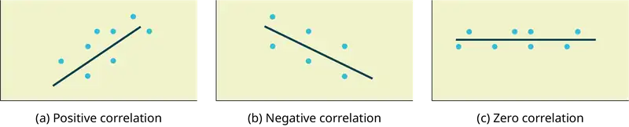
The formula for r looks formidable. However, computer spreadsheets, statistical software, and many calculators can quickly calculate r. The correlation coefficient r is the bottom item in the output screens for the LinRegTTest on the TI-83, TI-83+, or TI-84+ calculator (see previous section for instructions).
The Coefficient of Determination¶
The variable r2 is called the coefficient of determination and is the square of the correlation coefficient, but is usually stated as a percent, rather than in decimal form. It has an interpretation in the context of the data:
- \(r^{2}\), when expressed as a percent, represents the percent of variation in the dependent (predicted) variable y that can be explained by variation in the independent (explanatory) variable x using the regression (best-fit) line.
- 1 – \(r^{2}\), when expressed as a percentage, represents the percent of variation in y that is NOT explained by variation in x using the regression line. This can be seen as the scattering of the observed data points about the regression line.
Consider the third exam/final exam example introduced in the previous section
- The line of best fit is: ŷ = –173.51 + 4.83x
- The correlation coefficient is r = 0.6631
- The coefficient of determination is r2 = 0.66312 = 0.4397
- Interpretation of r2 in the context of this example:
- Approximately 44% of the variation (0.4397 is approximately 0.44) in the final-exam grades can be explained by the variation in the grades on the third exam, using the best-fit regression line.
- Therefore, approximately 56% of the variation (1 – 0.44 = 0.56) in the final exam grades can NOT be explained by the variation in the grades on the third exam, using the best-fit regression line. (This is seen as the scattering of the points about the line.)
12.4 Testing the Significance of the Correlation Coefficient¶
The correlation coefficient, r, tells us about the strength and direction of the linear relationship between x and y. However, the reliability of the linear model also depends on how many observed data points are in the sample. We need to look at both the value of the correlation coefficient r and the sample size n, together.
We perform a hypothesis test of the "significance of the correlation coefficient" to decide whether the linear relationship in the sample data is strong enough to use to model the relationship in the population.
The sample data are used to compute r, the correlation coefficient for the sample. If we had data for the entire population, we could find the population correlation coefficient. But because we have only sample data, we cannot calculate the population correlation coefficient. The sample correlation coefficient, r, is our estimate of the unknown population correlation coefficient.
The symbol for the population correlation coefficient is ρ, the Greek letter "rho."
ρ = population correlation coefficient (unknown)
r = sample correlation coefficient (known; calculated from sample data)
The hypothesis test lets us decide whether the value of the population correlation coefficient ρ is "close to zero" or "significantly different from zero". We decide this based on the sample correlation coefficient r and the sample size n.
If the test concludes that the correlation coefficient is significantly different from zero, we say that the correlation coefficient is "significant."
- Conclusion: There is sufficient evidence to conclude that there is a significant linear relationship between x and y because the correlation coefficient is significantly different from zero.
- What the conclusion means: There is a significant linear relationship between x and y. We can use the regression line to model the linear relationship between x and y in the population.
If the test concludes that the correlation coefficient is not significantly different from zero (it is close to zero), we say that correlation coefficient is "not significant".
- Conclusion: "There is insufficient evidence to conclude that there is a significant linear relationship between x and y because the correlation coefficient is not significantly different from zero."
- What the conclusion means: There is not a significant linear relationship between x and y. Therefore, we CANNOT use the regression line to model a linear relationship between x and y in the population.
NOTE
- If r is significant and the scatter plot shows a linear trend, the line can be used to predict the value of y for values of x that are within the domain of observed x values.
- If r is not significant OR if the scatter plot does not show a linear trend, the line should not be used for prediction.
- If r is significant and if the scatter plot shows a linear trend, the line may NOT be appropriate or reliable for prediction OUTSIDE the domain of observed x values in the data.
Performing the Hypothesis Test¶
- Null Hypothesis: H0: ρ = 0
- Alternate Hypothesis: Ha: ρ ≠ 0
WHAT THE HYPOTHESES MEAN IN WORDS:
- Null Hypothesis H0: The population correlation coefficient IS NOT significantly different from zero. There IS NOT a significant linear relationship (correlation) between x and y in the population.
- Alternate Hypothesis Ha: The population correlation coefficient IS significantly DIFFERENT FROM zero. There IS A SIGNIFICANT LINEAR RELATIONSHIP (correlation) between x and y in the population.
DRAWING A CONCLUSION:
There are two methods of making the decision. The two methods are equivalent and give the same result.
- Method 1: Using the p-value
- Method 2: Using a table of critical values
In this chapter of this textbook, we will always use a significance level of 5%, α = 0.05
NOTE
Using the p-value method, you could choose any appropriate significance level you want; you are not limited to using α = 0.05. But the table of critical values provided in this textbook assumes that we are using a significance level of 5%, α = 0.05. (If we wanted to use a different significance level than 5% with the critical value method, we would need different tables of critical values that are not provided in this textbook.)
METHOD 1: Using a p-value to make a decision¶
Using the Calculator
To calculate the p-value using LinRegTTEST:
On the LinRegTTEST input screen, on the line prompt for β or ρ, highlight "≠ 0"
The output screen shows the p-value on the line that reads "p =".
(Most computer statistical software can calculate the p-value.)
If the p-value is less than the significance level (α = 0.05):
- Decision: Reject the null hypothesis.
- Conclusion: "There is sufficient evidence to conclude that there is a significant linear relationship between x and y because the correlation coefficient is significantly different from zero."
If the p-value is NOT less than the significance level (α = 0.05)
- Decision: DO NOT REJECT the null hypothesis.
- Conclusion: "There is insufficient evidence to conclude that there is a significant linear relationship between x and y because the correlation coefficient is NOT significantly different from zero."
Calculation Notes:
You will use technology to calculate the p-value. The following describes the calculations to compute the test statistics and the p-value:
The p-value is calculated using a t-distribution with n - 2 degrees of freedom.
The formula for the test statistic is \(t=\frac{r\sqrt{n-2}}{\sqrt{1-r^{2}}}\). The value of the test statistic, t, is shown in the computer or calculator output along with the p-value. The test statistic t has the same sign as the correlation coefficient r.
The p-value is the combined area in both tails.
An alternative way to calculate the p-value (p) given by LinRegTTest is the command 2*tcdf(abs(t),10^99, n-2) in 2nd DISTR.
THIRD-EXAM vs FINAL-EXAM EXAMPLE: p-value method
- Consider the third exam/final exam example.
- The line of best fit is: ŷ = -173.51 + 4.83x with r = 0.6631 and there are n = 11 data points.
- Can the regression line be used for prediction? Given a third exam score (x value), can we use the line to predict the final exam score (predicted y value)?
H0: ρ = 0
Ha: ρ ≠ 0
α = 0.05
- The p-value is 0.026 (from LinRegTTest on your calculator or from computer software).
- The p-value, 0.026, is less than the significance level of α = 0.05.
- Decision: Reject the Null Hypothesis H0
- Conclusion: There is sufficient evidence to conclude that there is a significant linear relationship between the third exam score (x) and the final exam score (y) because the correlation coefficient is significantly different from zero.
Because r is significant and the scatter plot shows a linear trend, the regression line can be used to predict final exam scores.
METHOD 2: Using a table of Critical Values to make a decision¶
The 95% Critical Values of the Sample Correlation Coefficient Table can be used to give you a good idea of whether the computed value of \(r\) is significant or not. Compare r to the appropriate critical value in the table. If r is not between the positive and negative critical values, then the correlation coefficient is significant. If r is significant, then you may want to use the line for prediction.
Example 12.7
Suppose you computed r = 0.801 using n = 10 data points. df = n - 2 = 10 - 2 = 8. The critical values associated with df = 8 are -0.632 and + 0.632. If r < negative critical value or r > positive critical value, then r is significant. Since r = 0.801 and 0.801 > 0.632, r is significant and the line may be used for prediction. If you view this example on a number line, it will help you.
Try It
For a given line of best fit, you computed that r = 0.6501 using n = 12 data points and the critical value is 0.576. Can the line be used for prediction? Why or why not?
Example 12.8
Suppose you computed r = –0.624 with 14 data points. df = 14 – 2 = 12. The critical values are –0.532 and 0.532. Since –0.624 < –0.532, r is significant and the line can be used for prediction
Try It
For a given line of best fit, you compute that r = 0.5204 using n = 9 data points, and the critical value is 0.666. Can the line be used for prediction? Why or why not?
Example 12.9
Suppose you computed r = 0.776 and n = 6. df = 6 – 2 = 4. The critical values are –0.811 and 0.811. Since –0.811 < 0.776 < 0.811, r is not significant, and the line should not be used for prediction.
Try It
For a given line of best fit, you compute that r = –0.7204 using n = 8 data points, and the critical value is = 0.707. Can the line be used for prediction? Why or why not?
THIRD-EXAM vs FINAL-EXAM EXAMPLE: critical value method¶
Consider the third exam/final exam example. The line of best fit is: ŷ = –173.51+4.83x with r = 0.6631 and there are n = 11 data points. Can the regression line be used for prediction? Given a third-exam score (x value), can we use the line to predict the final exam score (predicted y value)?
H0: ρ = 0
Ha: ρ ≠ 0
α = 0.05
- Use the "95% Critical Value" table for r with df = n – 2 = 11 – 2 = 9.
- The critical values are –0.602 and +0.602
- Since 0.6631 > 0.602, r is significant.
- Decision: Reject the null hypothesis.
- Conclusion:There is sufficient evidence to conclude that there is a significant linear relationship between the third exam score (x) and the final exam score (y) because the correlation coefficient is significantly different from zero.
Because r is significant and the scatter plot shows a linear trend, the regression line can be used to predict final exam scores.
Example 12.10
Suppose you computed the following correlation coefficients. Using the table at the end of the chapter, determine if r is significant and the line of best fit associated with each r can be used to predict a y value. If it helps, draw a number line.
- r = –0.567 and the sample size, n, is 19. The df = n – 2 = 17. The critical value is –0.456. –0.567 < –0.456 so r is significant.
- r = 0.708 and the sample size, n, is nine. The df = n – 2 = 7. The critical value is 0.666. 0.708 > 0.666 so r is significant.
- r = 0.134 and the sample size, n, is 14. The df = 14 – 2 = 12. The critical value is 0.532. 0.134 is between –0.532 and 0.532 so r is not significant.
- r = 0 and the sample size, n, is five. No matter what the dfs are, r = 0 is between the two critical values so r is not significant.
Try It
For a given line of best fit, you compute that r = 0 using n = 100 data points. Can the line be used for prediction? Why or why not?
Assumptions in Testing the Significance of the Correlation Coefficient¶
Testing the significance of the correlation coefficient requires that certain assumptions about the data are satisfied. The premise of this test is that the data are a sample of observed points taken from a larger population. We have not examined the entire population because it is not possible or feasible to do so. We are examining the sample to draw a conclusion about whether the linear relationship that we see between x and y in the sample data provides strong enough evidence so that we can conclude that there is a linear relationship between x and y in the population.
The regression line equation that we calculate from the sample data gives the best-fit line for our particular sample. We want to use this best-fit line for the sample as an estimate of the best-fit line for the population. Examining the scatterplot and testing the significance of the correlation coefficient helps us determine if it is appropriate to do this.
The assumptions underlying the test of significance are:
- The relationship between the variables being correlated should be linear. The data points should fall along an approximate straight-line pattern when plotted as (x, y) data points on a scatter plot.
- The y values for any particular x value are normally distributed about the line. This implies that there are more y values scattered closer to the line than are scattered farther away. Assumption (1) implies that these normal distributions are centered on the line: the means of these normal distributions of y values lie on the line.
- The standard deviations of the population y values about the line are equal for each value of x. In other words, each of these normal distributions of y values has the same shape and spread about the line.
- The residual errors are mutually independent (no pattern).
- The data are produced from a well-designed, random sample or randomized experiment.
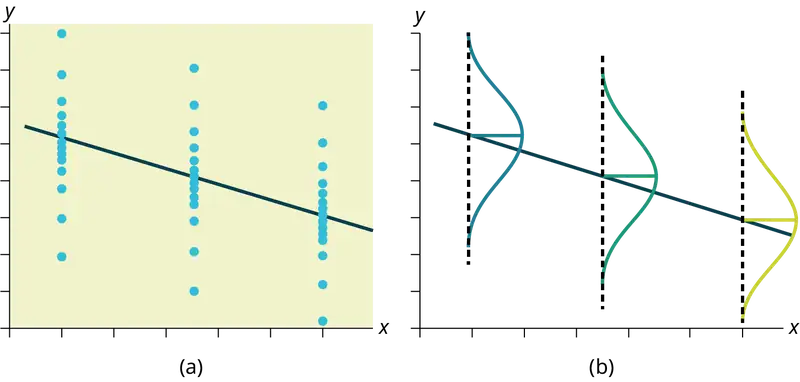
12.5 Prediction¶
Recall the third exam/final exam example.
We examined the scatterplot and showed that the correlation coefficient is significant. We found the equation of the best-fit line for the final exam grade as a function of the grade on the third-exam. We can now use the least-squares regression line for prediction.
Suppose you want to estimate, or predict, the mean final exam score of statistics students who received 73 on the third exam. The exam scores (x-values) range from 65 to 75. Since 73 is between the x-values 65 and 75, substitute x = 73 into the equation. Then:
We predict that statistics students who earn a grade of 73 on the third exam will earn a grade of 179.08 on the final exam, on average.
Example 12.11
Recall the third exam/final exam example.
a. What would you predict the final exam score to be for a student who scored a 66 on the third exam?
b. What would you predict the final exam score to be for a student who scored a 90 on the third exam?
Solution
a. 145.27
b. The x values in the data are between 65 and 75. Ninety is outside of the domain of the observed x values in the data (independent variable), so you cannot reliably predict the final exam score for this student. (Even though it is possible to enter 90 into the equation for x and calculate a corresponding y value, the y value that you get will not be reliable.)
To understand really how unreliable the prediction can be outside of the observed x values observed in the data, make the substitution x = 90 into the equation.
\(\hat{y}=-173.51+4.83(90)=261.19\)
The final-exam score is predicted to be 261.19. The largest the final-exam score can be is 200.
NOTE
The process of predicting inside of the observed x values observed in the data is called interpolation. The process of predicting outside of the observed x values observed in the data is called extrapolation.
Try It
Data are collected on the relationship between the number of hours per week practicing a musical instrument and scores on a math test. The line of best fit is as follows:
ŷ = 72.5 + 2.8x
What would you predict the score on a math test would be for a student who practices a musical instrument for five hours a week?
12.6 Outliers¶
In some data sets, there are values (observed data points) called outliers. Outliers are observed data points that are far from the least squares line. They have large "errors", where the "error" or residual is the vertical distance from the line to the point.
Outliers need to be examined closely. Sometimes, for some reason or another, they should not be included in the analysis of the data. It is possible that an outlier is a result of erroneous data. Other times, an outlier may hold valuable information about the population under study and should remain included in the data. The key is to examine carefully what causes a data point to be an outlier.
Besides outliers, a sample may contain one or a few points that are called influential points. Influential points are observed data points that are far from the other observed data points in the horizontal direction. These points may have a big effect on the slope of the regression line. To begin to identify an influential point, you can remove it from the data set and see if the slope of the regression line is changed significantly.
Computers and many calculators can be used to identify outliers from the data. Computer output for regression analysis will often identify both outliers and influential points so that you can examine them.
Identifying Outliers¶
We could guess at outliers by looking at a graph of the scatterplot and best fit-line. However, we would like some guideline as to how far away a point needs to be in order to be considered an outlier. As a rough rule of thumb, we can flag any point that is located further than two standard deviations above or below the best-fit line as an outlier. The standard deviation used is the standard deviation of the residuals or errors.
We can do this visually in the scatter plot by drawing an extra pair of lines that are two standard deviations above and below the best-fit line. Any data points that are outside this extra pair of lines are flagged as potential outliers. Or we can do this numerically by calculating each residual and comparing it to twice the standard deviation. On the TI-83, 83+, or 84+, the graphical approach is easier. The graphical procedure is shown first, followed by the numerical calculations. You would generally need to use only one of these methods.
Example 12.12
In the third exam/final exam example, you can determine if there is an outlier or not. If there is an outlier, as an exercise, delete it and fit the remaining data to a new line. For this example, the new line ought to fit the remaining data better. This means the SSE should be smaller and the correlation coefficient ought to be closer to 1 or –1.
Solution
With the TI-83, 83+, 84+ graphing calculators, it is easy to identify the outliers graphically and visually. If we were to measure the vertical distance from any data point to the corresponding point on the line of best fit and that distance were equal to 2s or more, then we would consider the data point to be "too far" from the line of best fit. We need to find and graph the lines that are two standard deviations below and above the regression line. Any points that are outside these two lines are outliers. We will call these lines Y2 and Y3:
As we did with the equation of the regression line and the correlation coefficient, we will use technology to calculate this standard deviation for us. Using the LinRegTTest with this data, scroll down through the output screens to find s = 16.412.
Line Y2 = –173.5 + 4.83x –2(16.4) and line Y3 = –173.5 + 4.83x + 2(16.4)
where ŷ = –173.5 + 4.83x is the line of best fit. Y2 and Y3 have the same slope as the line of best fit.
Graph the scatterplot with the best fit line in equation Y1, then enter the two extra lines as Y2 and Y3 in the "Y="equation editor and press ZOOM 9. You will find that the only data point that is not between lines Y2 and Y3 is the point x = 65, y = 175. On the calculator screen it is just barely outside these lines. The outlier is the student who had a grade of 65 on the third exam and 175 on the final exam; this point is further than two standard deviations away from the best-fit line.
Sometimes a point is so close to the lines used to flag outliers on the graph that it is difficult to tell if the point is between or outside the lines. On a computer, enlarging the graph may help; on a small calculator screen, zooming in may make the graph clearer. Note that when the graph does not give a clear enough picture, you can use the numerical comparisons to identify outliers.
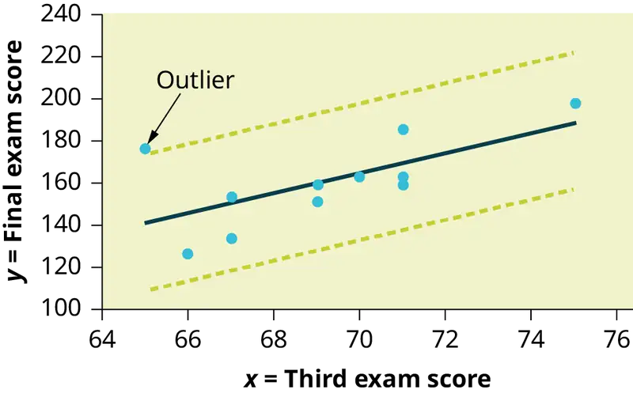
Try It
Identify the potential outlier in the scatter plot. The standard deviation of the residuals or errors is approximately 8.6.
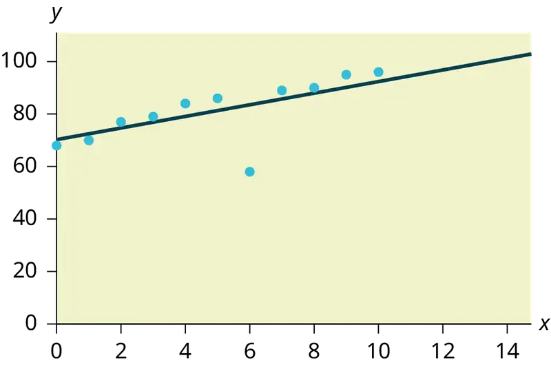
Numerical Identification of Outliers¶
In Table 12.6, the first two columns are the third-exam and final-exam data. The third column shows the predicted ŷ values calculated from the line of best fit: ŷ = –173.5 + 4.83x. The residuals, or errors, have been calculated in the fourth column of the table: observed y value−predicted y value = y − ŷ.
s is the standard deviation of all the y − ŷ = ε values where n = the total number of data points. If each residual is calculated and squared, and the results are added, we get the SSE. The standard deviation of the residuals is calculated from the SSE as:
NOTE
We divide by (n – 2) because the regression model involves two estimates.
Rather than calculate the value of s ourselves, we can find s using the computer or calculator. For this example, the calculator function LinRegTTest found s = 16.4 as the standard deviation of the residuals
35
–17
16
–6
–19
9
3
–1
–10
–9
–1
.
Table 12.6
| x | y | ŷ | y – ŷ |
|---|---|---|---|
| 65 | 175 | 140 | 175 – 140 = 35 |
| 67 | 133 | 150 | 133 – 150= –17 |
| 71 | 185 | 169 | 185 – 169 = 16 |
| 71 | 163 | 169 | 163 – 169 = –6 |
| 66 | 126 | 145 | 126 – 145 = –19 |
| 75 | 198 | 189 | 198 – 189 = 9 |
| 67 | 153 | 150 | 153 – 150 = 3 |
| 70 | 163 | 164 | 163 – 164 = –1 |
| 71 | 159 | 169 | 159 – 169 = –10 |
| 69 | 151 | 160 | 151 – 160 = –9 |
| 69 | 159 | 160 | 159 – 160 = –1 |
We are looking for all data points for which the residual is greater than 2s = 2(16.4) = 32.8 or less than –32.8. Compare these values to the residuals in column four of the table. The only such data point is the student who had a grade of 65 on the third exam and 175 on the final exam; the residual for this student is 35.
How does the outlier affect the best fit line?¶
Numerically and graphically, we have identified the point (65, 175) as an outlier. We should re-examine the data for this point to see if there are any problems with the data. If there is an error, we should fix the error if possible, or delete the data. If the data is correct, we would leave it in the data set. For this problem, we will suppose that we examined the data and found that this outlier data was an error. Therefore we will continue on and delete the outlier, so that we can explore how it affects the results, as a learning experience.
Compute a new best-fit line and correlation coefficient using the ten remaining points:
On the TI-83, TI-83+, TI-84+ calculators, delete the outlier from L1 and L2. Using the LinRegTTest, the new line of best fit and the correlation coefficient are:
ŷ = –355.19 + 7.39x and r = 0.9121
The new line with r = 0.9121 is a stronger correlation than the original (r = 0.6631) because r = 0.9121 is closer to one. This means that the new line is a better fit to the ten remaining data values. The line can better predict the final exam score given the third exam score.
Numerical Identification of Outliers: Calculating s and Finding Outliers Manually¶
If you do not have the function LinRegTTest, then you can calculate the outlier in the first example by doing the following.
First, square each |y – ŷ|
The squares are
352
172
162
62
192
92
32
12
102
92
12
Then, add (sum) all the |y – ŷ| squared terms using the formula
\(\overset{11}{\underset{i=1}{\Sigma}}{(|y_{i}-{\hat{y}}_{i}|)}^{2}=\overset{11}{\underset{i=1}{\Sigma}}\varepsilon_{i}{}^{2}\) (Recall that yi – ŷi = εi.)
= 352 + 172 + 162 + 62 + 192 + 92 + 32 + 12 + 102 + 92 + 12
= 2440 = SSE. The result, SSE is the Sum of Squared Errors.
Next, calculate s, the standard deviation of all the y – ŷ = ε values where n = the total number of data points.
The calculation is \(s=\sqrt{\frac{\text{SSE}}{n-2}}\).
For the third exam/final exam problem, \(s=\sqrt{\frac{2440}{11-2}}=16.47\).
Next, multiply s by 2:
(2)(16.47) = 32.94
32.94 is 2 standard deviations away from the mean of the y – ŷ values.
If we were to measure the vertical distance from any data point to the corresponding point on the line of best fit and that distance is at least 2s, then we would consider the data point to be "too far" from the line of best fit. We call that point a potential outlier.
For the example, if any of the |y – ŷ| values are at least 32.94, the corresponding (x, y) data point is a potential outlier.
For the third exam/final exam problem, all the |y – ŷ|'s are less than 31.29 except for the first one which is 35.
35 > 31.29 That is, |y – ŷ| ≥ (2)(s)
The point which corresponds to |y – ŷ| = 35 is (65, 175). Therefore, the data point (65,175) is a potential outlier. For this example, we will delete it. (Remember, we do not always delete an outlier.)
NOTE
When outliers are deleted, the researcher should either record that data was deleted, and why, or the researcher should provide results both with and without the deleted data. If data is erroneous and the correct values are known (e.g., student one actually scored a 70 instead of a 65), then this correction can be made to the data.
The next step is to compute a new best-fit line using the ten remaining points. The new line of best fit and the correlation coefficient are:
ŷ = –355.19 + 7.39x and r = 0.9121
Example 12.13
Using this new line of best fit (based on the remaining ten data points in the third exam/final exam example), what would a student who receives a 73 on the third exam expect to receive on the final exam? Is this the same as the prediction made using the original line?
Solution
Using the new line of best fit, ŷ = –355.19 + 7.39(73) = 184.28. A student who scored 73 points on the third exam would expect to earn 184 points on the final exam.
The original line predicted ŷ = –173.51 + 4.83(73) = 179.08 so the prediction using the new line with the outlier eliminated differs from the original prediction.
Try It
The data points for the graph from the third exam/final exam example are as follows: (1, 5), (2, 7), (2, 6), (3, 9), (4, 12), (4, 13), (5, 18), (6, 19), (7, 12), and (7, 21). Remove the outlier and recalculate the line of best fit. Find the value of ŷ when x = 10.
Example 12.14
The Consumer Price Index (CPI) measures the average change over time in the prices paid by urban consumers for consumer goods and services. The CPI affects nearly all Americans because of the many ways it is used. One of its biggest uses is as a measure of inflation. By providing information about price changes in the Nation's economy to government, business, and labor, the CPI helps them to make economic decisions. The President, Congress, and the Federal Reserve Board use the CPI's trends to formulate monetary and fiscal policies. In the following table, x is the year and y is the CPI.
Table 12.7 Data
| x | y | x | y |
|---|---|---|---|
| 1915 | 10.1 | 1979 | 72.6 |
| 1926 | 17.7 | 1980 | 82.4 |
| 1935 | 13.7 | 1986 | 109.6 |
| 1940 | 14.7 | 1991 | 130.7 |
| 1947 | 24.1 | 1999 | 166.6 |
| 1952 | 26.5 | 2010 | 219.2 |
| 1964 | 31.0 | 2020 | 258 |
| 1969 | 36.7 | 2023 | 299.2 |
| 1975 | 49.3 |
- Draw a scatterplot of the data.
- Calculate the least squares line. Write the equation in the form ŷ = a + bx.
- Draw the line on the scatterplot.
- Find the correlation coefficient. Is it significant?
- What is the average CPI for the year 1990?
Solution
- See Figure 12.22.
- ŷ = –3204 + 1.662x is the equation of the line of best fit.
- r = 0.8694
- The number of data points is n = 14. Use the 95% Critical Values of the Sample Correlation Coefficient table at the end of Chapter 12. n – 2 = 12. The corresponding critical value is 0.532. Since 0.8694 > 0.532, r is significant.
ŷ = –3204 + 1.662(1990) = 103.4 CPI - Using the calculator LinRegTTest, we find that s = 25.4 ; graphing the lines Y2 = –3204 + 1.662X – 2(25.4) and Y3 = –3204 + 1.662X + 2(25.4) shows that no data values are outside those lines, identifying no outliers. (Note that the year 1999 was very close to the upper line, but still inside it.)
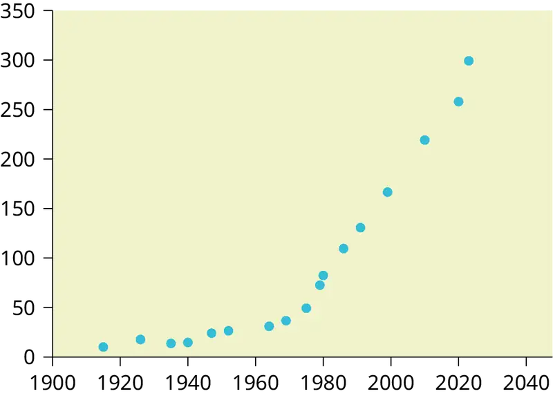
NOTE
In the example, notice the pattern of the points compared to the line. Although the correlation coefficient is significant, the pattern in the scatterplot indicates that a curve would be a more appropriate model to use than a line. In this example, a statistician should prefer to use other methods to fit a curve to this data, rather than model the data with the line we found. In addition to doing the calculations, it is always important to look at the scatterplot when deciding whether a linear model is appropriate.
If you are interested in seeing more years of data, visit the Bureau of Labor Statistics CPI website ftp://ftp.bls.gov/pub/special.requests/cpi/cpiai.txt; our data is taken from the column entitled "Annual Avg." (third column from the right). For example you could add more current years of data. Try adding the more recent years: 2010: CPI = 219.2; 2020: CPI = 258.0; 2023: CPI = 299.2. See how it affects the model. (Check: \(\overset{⏜}{y}=-5030+2.598x\); \(r=0.9067\). Is r significant? Is the fit better with the addition of the new points?)
Try It
The following table shows economic development measured in per capita income PCINC.
Table 12.8
| Year | PCINC | Year | PCINC |
|---|---|---|---|
| 1870 | 340 | 1920 | 1050 |
| 1880 | 499 | 1930 | 1170 |
| 1890 | 592 | 1940 | 1364 |
| 1900 | 757 | 1950 | 1836 |
| 1910 | 927 | 1960 | 2132 |
- What are the independent and dependent variables?
- Draw a scatter plot.
- Use regression to find the line of best fit and the correlation coefficient.
- Interpret the significance of the correlation coefficient.
- Is there a linear relationship between the variables?
- Find the coefficient of determination and interpret it.
- What is the slope of the regression equation? What does it mean?
- Use the line of best fit to estimate PCINC for 1900, for 2000.
- Determine if there are any outliers.
95% Critical Values of the Sample Correlation Coefficient Table¶
Table 12.9
| Degrees of Freedom: n – 2 | Critical Values: (+ and –) |
|---|---|
| 1 | 0.997 |
| 2 | 0.950 |
| 3 | 0.878 |
| 4 | 0.811 |
| 5 | 0.754 |
| 6 | 0.707 |
| 7 | 0.666 |
| 8 | 0.632 |
| 9 | 0.602 |
| 10 | 0.576 |
| 11 | 0.555 |
| 12 | 0.532 |
| 13 | 0.514 |
| 14 | 0.497 |
| 15 | 0.482 |
| 16 | 0.468 |
| 17 | 0.456 |
| 18 | 0.444 |
| 19 | 0.433 |
| 20 | 0.423 |
| 21 | 0.413 |
| 22 | 0.404 |
| 23 | 0.396 |
| 24 | 0.388 |
| 25 | 0.381 |
| 26 | 0.374 |
| 27 | 0.367 |
| 28 | 0.361 |
| 29 | 0.355 |
| 30 | 0.349 |
| 40 | 0.304 |
| 50 | 0.273 |
| 60 | 0.250 |
| 70 | 0.232 |
| 80 | 0.217 |
| 90 | 0.205 |
| 100 | 0.195 |
12.7 Regression (Distance from School)¶
Lab: Regression (Distance from School)
Class Time:
Names:
Student Learning Outcomes
- The student will calculate and construct the line of best fit between two variables.
- The student will evaluate the relationship between two variables to determine if that relationship is significant.
Collect the Data
Use eight members of your class for the sample. Collect bivariate data (distance an individual lives from school, the cost of supplies for the current term).
1. Complete the table.
Table 12.10
| Distance from school | Cost of supplies this term |
|---|---|
2. Which variable should be the dependent variable and which should be the independent variable? Why?
3. Graph “distance” vs. “cost.” Plot the points on the graph. Label both axes with words. Scale both axes.

Analyze the Data
Enter your data into your calculator or computer. Write the linear equation, rounding to four decimal places.
1. Calculate the following:
a. a = ______
b. b = ______
c. correlation = ______
d. n = ______
e. equation: ŷ = ______
f. Is the correlation significant? Why or why not? (Answer in one to three complete sentences.)
2. Supply an answer for the following senarios:
a. For a person who lives eight miles from campus, predict the total cost of supplies this term:
b. For a person who lives eighty miles from campus, predict the total cost of supplies this term:
3. Obtain the graph on your calculator or computer. Sketch the regression line.

Discussion Questions
-
Answer each question in complete sentences.
a. Does the line seem to fit the data? Why?
b. What does the correlation imply about the relationship between the distance and the cost?
-
Are there any outliers? If so, which point is an outlier?
-
Should the outlier, if it exists, be removed? Why or why not?
12.8 Regression (Textbook Cost)¶
Lab: Regression (Textbook Cost)
Class Time:
Names:
Student Learning Outcomes
- The student will calculate and construct the line of best fit between two variables.
- The student will evaluate the relationship between two variables to determine if that relationship is significant.
Collect the Data
Survey ten textbooks. Collect bivariate data (number of pages in a textbook, the cost of the textbook).
1. Complete the table.
Table 12.11
| Number of pages | Cost of textbook |
|---|---|
2. Which variable should be the dependent variable and which should be the independent variable? Why?
3. Graph “pages” vs. “cost.” Plot the points on the graph in Analyze the Data. Label both axes with words. Scale both axes.
Analyze the Data
Enter your data into your calculator or computer. Write the linear equation, rounding to four decimal places.
1. Calculate the following:
a. a = ______
b. b = ______
c. correlation = ______
d. n = ______
e. equation: y = ______
f. Is the correlation significant? Why or why not? (Answer in complete sentences.)
2. Supply an answer for the following senarios:
a. For a textbook with 400 pages, predict the cost.
b. For a textbook with 600 pages, predict the cost.
3. Obtain the graph on your calculator or computer. Sketch the regression line.
Discussion Questions
-
Answer each question in complete sentences.
a. Does the line seem to fit the data? Why?
b. What does the correlation imply about the relationship between the number of pages and the cost?
-
Are there any outliers? If so, which point(s) is an outlier?
-
Should the outlier, if it exists, be removed? Why or why not?
12.9 Regression (Fuel Efficiency)¶
Lab: Regression (Fuel Efficiency)
Class Time:
Names:
Student Learning Outcomes
- The student will calculate and construct the line of best fit between two variables.
- The student will evaluate the relationship between two variables to determine if that relationship is significant.
Collect the Data
Find a reputable source that provides information on total fuel efficiency (in miles per gallon) and weight (in pounds) of new model cars with automatic transmissions. We will use this data to determine the relationship, if any, between the fuel efficiency of a car and its weight.
1. Using your random number generator, randomly select 20 cars from the list and record their weights and fuel efficiency into Table 12.12.
Table 12.12
| Weight | Fuel Efficiency |
|---|---|
2. Which variable should be the dependent variable and which should be the independent variable? Why?
3. By hand, do a scatterplot of “weight” vs. “fuel efficiency”. Plot the points on graph paper. Label both axes with words. Scale both axes accurately.

Analyze the Data
Enter your data into your calculator or computer. Write the linear equation, rounding to 4 decimal places.
-
Calculate the following:
a. a = ______
b. b = ______
c. correlation = ______
d. n = ______
e. equation: ŷ = ______
-
Obtain the graph of the regression line on your calculator. Sketch the regression line on the same axes as your scatter plot.
Discussion Questions
-
Is the correlation significant? Explain how you determined this in complete sentences.
-
Is the relationship a positive one or a negative one? Explain how you can tell and what this means in terms of weight and fuel efficiency.
-
In one or two complete sentences, what is the practical interpretation of the slope of the least squares line in terms of fuel efficiency and weight?
-
For a car that weighs 4,000 pounds, predict its fuel efficiency. Include units.
-
Can we predict the fuel efficiency of a car that weighs 10,000 pounds using the least squares line? Explain why or why not.
-
Answer each question in complete sentences.
a. Does the line seem to fit the data? Why or why not?
b. What does the correlation imply about the relationship between fuel efficiency and weight of a car? Is this what you expected?
-
Are there any outliers? If so, which point is an outlier?
Chapter Review¶
Key Terms¶
- Outlier
- an observation that does not fit the rest of the data
Chapter Review¶
12.1 Linear Equations¶
The most basic type of association is a linear association. This type of relationship can be defined algebraically by the equations used, numerically with actual or predicted data values, or graphically from a plotted curve. (Lines are classified as straight curves.) Algebraically, a linear equation typically takes the form y = mx + b, where m and b are constants, x is the independent variable, y is the dependent variable. In a statistical context, a linear equation is written in the form y = a + bx, where a and b are the constants. This form is used to help readers distinguish the statistical context from the algebraic context. In the equation y = a + bx, the constant b, called a coefficient, represents the slope. The constant a is called the y-intercept.
The slope of a line is a value that describes the rate of change between the independent and dependent variables. The slope tells us how the dependent variable (y) changes for every one unit increase in the independent (x) variable, on average. The y-intercept is used to describe the dependent variable when the independent variable equals zero.
12.2 Scatter Plots¶
Scatter plots are particularly helpful graphs when we want to see if there is a linear relationship among data points. They indicate both the direction of the relationship between the x variables and the y variables, and the strength of the relationship. We calculate the strength of the relationship between an independent variable and a dependent variable using linear regression.
12.3 The Regression Equation¶
A regression line, or a line of best fit, can be drawn on a scatter plot and used to predict outcomes for the x and y variables in a given data set or sample data. There are several ways to find a regression line, but usually the least-squares regression line is used because it creates a uniform line. Residuals, also called “errors,” measure the distance from the actual value of y and the estimated value of y. The Sum of Squared Errors, when set to its minimum, calculates the points on the line of best fit. Regression lines can be used to predict values within the given set of data, but should not be used to make predictions for values outside the set of data.
The correlation coefficient r measures the strength of the linear association between x and y. The variable r has to be between –1 and +1. When r is positive, the x and y will tend to increase and decrease together. When r is negative, x will increase and y will decrease, or the opposite, x will decrease and y will increase. The coefficient of determination r2, is equal to the square of the correlation coefficient. When expressed as a percent, r2 represents the percent of variation in the dependent variable y that can be explained by variation in the independent variable x using the regression line.
12.4 Testing the Significance of the Correlation Coefficient¶
Linear regression is a procedure for fitting a straight line of the form ŷ = a + bx to data. The conditions for regression are:
- Linear In the population, there is a linear relationship that models the average value of y for different values of x.
- Independent The residuals are assumed to be independent.
- Normal The y values are distributed normally for any value of x.
- Equal variance The standard deviation of the y values is equal for each x value.
- Random The data are produced from a well-designed random sample or randomized experiment.
The slope b and intercept a of the least-squares line estimate the slope β and intercept α of the population (true) regression line. To estimate the population standard deviation of y, σ, use the standard deviation of the residuals, s. \(s=\sqrt{\frac{SEE}{n-2}}\). The variable ρ (rho) is the population correlation coefficient. To test the null hypothesis H0: ρ = hypothesized value, use a linear regression t-test. The most common null hypothesis is H0: ρ = 0 which indicates there is no linear relationship between x and y in the population. The TI-83, 83+, 84, 84+ calculator function LinRegTTest can perform this test (STATS TESTS LinRegTTest).
12.5 Prediction¶
After determining the presence of a strong correlation coefficient and calculating the line of best fit, you can use the least squares regression line to make predictions about your data.
12.6 Outliers¶
To determine if a point is an outlier, do one of the following:
-
Input the following equations into the TI 83, 83+,84, 84+:
\(\begin{array}{l} y_{1}=a+bx \\ y_{2}=a+bx+2s \\ y_{3}=a+bx-2s \end{array}\) where s is the standard deviation of the residuals
If any point is above y2 or below y3 then the point is considered to be an outlier.
-
Use the residuals and compare their absolute values to 2s where s is the standard deviation of the residuals. If the absolute value of any residual is greater than or equal to 2s, then the corresponding point is an outlier.
-
Note: The calculator function LinRegTTest (STATS TESTS LinRegTTest) calculates s.
Formula Review¶
12.1 Linear Equations¶
y = a + bx where a is the y-intercept and b is the slope. The variable x is the independent variable and y is the dependent variable.
12.4 Testing the Significance of the Correlation Coefficient¶
Least Squares Line or Line of Best Fit:
\(\hat{y}=a+bx\)
where
a = y-intercept
b = slope
Standard deviation of the residuals:
\(s=\sqrt{\frac{SEE}{n-2}}.\)
where
SSE = sum of squared errors
n = the number of data points
References¶
References
12.1 Linear Equations
Data from the Centers for Disease Control and Prevention.
Data from the National Center for agency reporting flu cases and TB Prevention.
12.5 Prediction
Data from the Centers for Disease Control and Prevention.
Data from the National Center for agency reporting flu cases and TB Prevention.
Data from the United States Census Bureau. Available online at http://www.census.gov/compendia/statab/cats/transportation/motor_vehicle_accidents_and_fatalities.html
Data from the National Center for Health Statistics.
12.6 Outliers
Data from the House Ways and Means Committee, the Health and Human Services Department.
Data from Microsoft Bookshelf.
Data from the United States Department of Labor, the Bureau of Labor Statistics.
Data from the Physician’s Handbook, 1990.
Data from the United States Department of Labor, the Bureau of Labor Statistics.
Practice¶
12.1 Linear Equations¶
Use the following information to answer the next three exercises. A vacation resort rents SCUBA equipment to certified divers. The resort charges an up-front fee of $25 and another fee of $12.50 an hour.
1. What are the dependent and independent variables?
Answer
dependent variable: fee amount; independent variable: time
2. Find the equation that expresses the total fee in terms of the number of hours the equipment is rented.
3. Graph the equation from Exercise 2.
Answer
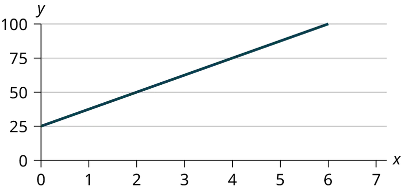
Use the following information to answer the next two exercises. A credit card company charges $10 when a payment is late, and $5 a day each day the payment remains unpaid.
4. Find the equation that expresses the total fee in terms of the number of days the payment is late.
5. Graph the equation from Exercise 4.
Answer
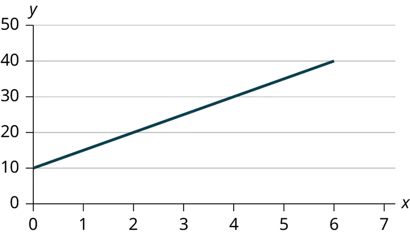
6. Is the equation y = 10 + 5x – 3x2 linear? Why or why not?
7. Which of the following equations are linear?
a. y = 6x + 8
b. y + 7 = 3x
c. y – x = 8x2
d. 4y = 8
Answer
y = 6x + 8, 4y = 8, and y + 7 = 3x are all linear equations.
8. Does the graph show a linear equation? Why or why not?
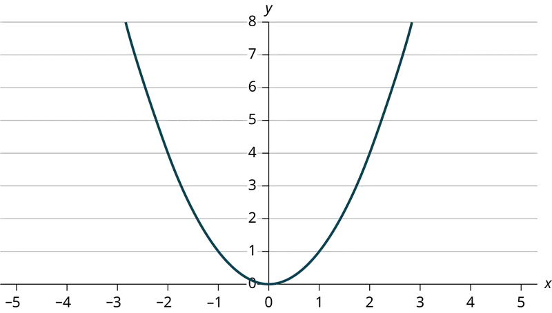
Table 12.13 contains real data for the first two decades of flu reporting.
Table 12.13 Adults and Adolescents only, United States
| Year | # flu cases diagnosed | # flu deaths |
| Pre-1981 | 91 | 29 |
| 1981 | 319 | 121 |
| 1982 | 1,170 | 453 |
| 1983 | 3,076 | 1,482 |
| 1984 | 6,240 | 3,466 |
| 1985 | 11,776 | 6,878 |
| 1986 | 19,032 | 11,987 |
| 1987 | 28,564 | 16,162 |
| 1988 | 35,447 | 20,868 |
| 1989 | 42,674 | 27,591 |
| 1990 | 48,634 | 31,335 |
| 1991 | 59,660 | 36,560 |
| 1992 | 78,530 | 41,055 |
| 1993 | 78,834 | 44,730 |
| 1994 | 71,874 | 49,095 |
| 1995 | 68,505 | 49,456 |
| 1996 | 59,347 | 38,510 |
| 1997 | 47,149 | 20,736 |
| 1998 | 38,393 | 19,005 |
| 1999 | 25,174 | 18,454 |
| 2000 | 25,522 | 17,347 |
| 2001 | 25,643 | 17,402 |
| 2002 | 26,464 | 16,371 |
| Total | 802,118 | 489,093 |
9. Use the columns "year" and "# flu cases diagnosed. Why is “year” the independent variable and “# flu cases diagnosed.” the dependent variable (instead of the reverse)?
Answer
The number of flu cases depends on the year. Therefore, year becomes the independent variable and the number of flu cases is the dependent variable.
Use the following information to answer the next two exercises. A specialty cleaning company charges an equipment fee and an hourly labor fee. A linear equation that expresses the total amount of the fee the company charges for each session is y = 50 + 100x.
10. What are the independent and dependent variables?
11. What is the y-intercept and what is the slope? Interpret them using complete sentences.
Answer
The y-intercept is 50 (a = 50). At the start of the cleaning, the company charges a one-time fee of $50 (this is when x = 0). The slope is 100 (b = 100). For each session, the company charges $100 for each hour they clean.
Use the following information to answer the next three questions. Due to erosion, a river shoreline is losing several thousand pounds of soil each year. A linear equation that expresses the total amount of soil lost per year is y = 12,000x.
12. What are the independent and dependent variables?
13. How many pounds of soil does the shoreline lose in a year?
Answer
12,000 pounds of soil
14. What is the y-intercept? Interpret its meaning.
Use the following information to answer the next two exercises. The price of a single issue of stock can fluctuate throughout the day. A linear equation that represents the price of stock for Shipment Express is y = 15 – 1.5x where x is the number of hours passed in an eight-hour day of trading.
15. What are the slope and y-intercept? Interpret their meaning.
Answer
The slope is –1.5 (b = –1.5). This means the stock is losing value at a rate of $1.50 per hour. The y-intercept is $15 (a = 15). This means the price of stock before the trading day was $15.
16. If you owned this stock, would you want a positive or negative slope? Why?
12.2 Scatter Plots¶
17. Does the scatter plot appear linear? Strong or weak? Positive or negative?
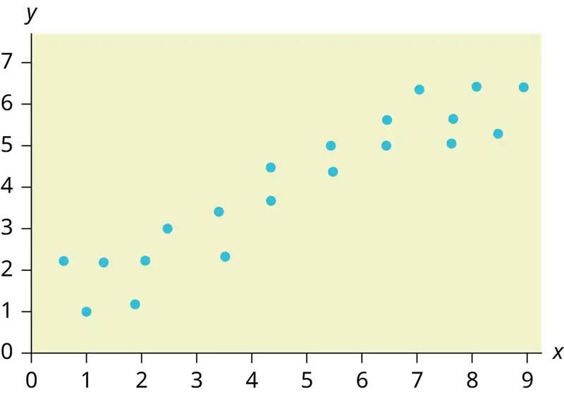
Answer
The data appear to be linear with a strong, positive correlation.
18. Does the scatter plot appear linear? Strong or weak? Positive or negative?
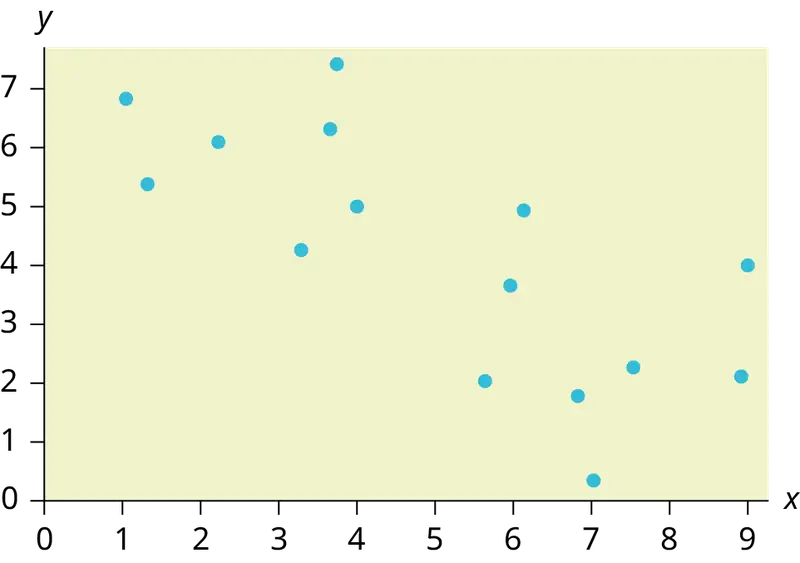
19. Does the scatter plot appear linear? Strong or weak? Positive or negative?
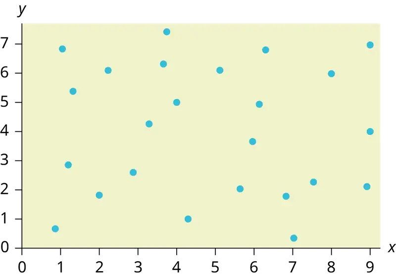
Answer
The data appear to have no correlation.
12.3 The Regression Equation¶
Use the following information to answer the next five exercises. A random sample of ten professional athletes produced the following data where x is the number of endorsements the player has and y is the amount of money made (in millions of dollars).
Table 12.14
| x | y | x | y |
|---|---|---|---|
| 0 | 2 | 5 | 12 |
| 3 | 8 | 4 | 9 |
| 2 | 7 | 3 | 9 |
| 1 | 3 | 0 | 3 |
| 5 | 13 | 4 | 10 |
20. Draw a scatter plot of the data.
21. Use regression to find the equation for the line of best fit.
Answer
ŷ = 2.23 + 1.99x
22. Draw the line of best fit on the scatter plot.
23. What is the slope of the line of best fit? What does it represent?
Answer
The slope is 1.99 (b = 1.99). It means that for every endorsement deal a professional player gets, he gets an average of another $1.99 million in pay each year.
24. What is the y-intercept of the line of best fit? What does it represent?
25. What does an r value of zero mean?
Answer
It means that there is no correlation between the data sets.
26. When n = 2 and r = 1, are the data significant? Explain.
27. When n = 100 and r = -0.89, is there a significant correlation? Explain.
Answer
Yes, there are enough data points and the value of r is strong enough to show that there is a strong negative correlation between the data sets.
12.4 Testing the Significance of the Correlation Coefficient¶
28. When testing the significance of the correlation coefficient, what is the null hypothesis?
29. When testing the significance of the correlation coefficient, what is the alternative hypothesis?
Answer
Ha: ρ ≠ 0
30. If the level of significance is 0.05 and the p-value is 0.04, what conclusion can you draw?
12.5 Prediction¶
Use the following information to answer the next two exercises. An electronics retailer used regression to find a simple model to predict sales growth in the first quarter of the new year (January through March). The model is good for 90 days, where x is the day. The model can be written as follows:
ŷ = 101.32 + 2.48x where ŷ is in thousands of dollars.
31. What would you predict the sales to be on day 60?
Answer
$250,120
32. What would you predict the sales to be on day 90?
Use the following information to answer the next three exercises. A landscaping company is hired to mow the grass for several large properties. The total area of the properties combined is 1,350 acres. The rate at which one person can mow is as follows:
ŷ = 1350 – 1.2x where x is the number of hours and ŷ represents the number of acres left to mow.
33. How many acres will be left to mow after 20 hours of work?
Answer
1,326 acres
34. How many acres will be left to mow after 100 hours of work?
35. How many hours will it take to mow all of the lawns? (When is ŷ = 0?)
Answer
1,125 hours, or when x = 1,125
Table 12.15 contains real data for the first two decades of flu cases reporting.
Table 12.15 Adults and Adolescents only, United States
| Year | # flu cases diagnosed | # flu deaths |
| Pre-1981 | 91 | 29 |
| 1981 | 319 | 121 |
| 1982 | 1,170 | 453 |
| 1983 | 3,076 | 1,482 |
| 1984 | 6,240 | 3,466 |
| 1985 | 11,776 | 6,878 |
| 1986 | 19,032 | 11,987 |
| 1987 | 28,564 | 16,162 |
| 1988 | 35,447 | 20,868 |
| 1989 | 42,674 | 27,591 |
| 1990 | 48,634 | 31,335 |
| 1991 | 59,660 | 36,560 |
| 1992 | 78,530 | 41,055 |
| 1993 | 78,834 | 44,730 |
| 1994 | 71,874 | 49,095 |
| 1995 | 68,505 | 49,456 |
| 1996 | 59,347 | 38,510 |
| 1997 | 47,149 | 20,736 |
| 1998 | 38,393 | 19,005 |
| 1999 | 25,174 | 18,454 |
| 2000 | 25,522 | 17,347 |
| 2001 | 25,643 | 17,402 |
| 2002 | 26,464 | 16,371 |
| Total | 802,118 | 489,093 |
36. Graph “year” versus “# flu cases diagnosed” (plot the scatter plot). Do not include pre-1981 data.
37. Perform linear regression. What is the linear equation? Round to the nearest whole number.
Answer
Answers may vary.
38. Find the correlation coefficient.
- r = ________
39. Solve.
- When x = 1985, ŷ = _____
- When x = 1990, ŷ =_____
- When x = 1970, ŷ =______ Why doesn’t this answer make sense?
Answer
- When x = 1985, ŷ = 25,52
- When x = 1990, ŷ = 34,275
- When x = 1970, ŷ = –725 Why doesn’t this answer make sense? The range of x values was 1981 to 2002; the year 1970 is not in this range. The regression equation does not apply, because predicting for the year 1970 is extrapolation, which requires a different process. Also, a negative number does not make sense in this context, where we are predicting flu cases diagnosed.
40. Does the line seem to fit the data? Why or why not?
41. What does the correlation imply about the relationship between time (years) and the number of diagnosed flu cases reported in the U.S.?
Answer
Also, the correlation r = 0.4526. If r is compared to the value in the 95% Critical Values of the Sample Correlation Coefficient Table, because r > 0.423, r is significant, and you would think that the line could be used for prediction. But the scatter plot indicates otherwise.
42. Plot the two given points on the following graph. Then, connect the two points to form the regression line.

Obtain the graph on your calculator or computer.
43. Write the equation: ŷ= ____________
Answer
\(\hat{y}\) = –3,448,225 + 1750x
44. Hand draw a smooth curve on the graph that shows the flow of the data.
45. Does the line seem to fit the data? Why or why not?
Answer
There was an increase in flu cases diagnosed until 1993. From 1993 through 2002, the number of flu cases diagnosed declined each year. It is not appropriate to use a linear regression line to fit to the data.
46. Do you think a linear fit is best? Why or why not?
47. What does the correlation imply about the relationship between time (years) and the number of diagnosed flu cases reported in the U.S.?
Answer
Since there is no linear association between year and # of flu cases diagnosed, it is not appropriate to calculate a linear correlation coefficient. When there is a linear association and it is appropriate to calculate a correlation, we cannot say that one variable “causes” the other variable.
48. Graph “year” vs. “# flu cases diagnosed.” Do not include pre-1981. Label both axes with words. Scale both axes.
49. Enter your data into your calculator or computer. The pre-1981 data should not be included. Why is that so?
Write the linear equation, rounding to four decimal places:
Answer
We don’t know if the pre-1981 data was collected from a single year. So we don’t have an accurate x value for this figure.
Regression equation: ŷ (#Flu Cases) = –3,448,225 + 1749.777 (year)
Table 12.16
| Coefficients | |
|---|---|
| Intercept | –3,448,225 |
| X Variable 1 | 1,749.777 |
50. Find the correlation coefficient.
- correlation = _____
12.6 Outliers¶
Use the following information to answer the next four exercises. The scatter plot shows the relationship between hours spent studying and exam scores. The line shown is the calculated line of best fit. The correlation coefficient is 0.69.
51. Do there appear to be any outliers?
Answer
Yes, there appears to be an outlier at (6, 58).
52. A point is removed, and the line of best fit is recalculated. The new correlation coefficient is 0.98. Does the point appear to have been an outlier? Why?
53. What effect did the potential outlier have on the line of best fit?
Answer
The potential outlier flattened the slope of the line of best fit because it was below the data set. It made the line of best fit less accurate as a predictor for the data.
54. Are you more or less confident in the predictive ability of the new line of best fit?
55. The Sum of Squared Errors for a data set of 18 numbers is 49. What is the standard deviation?
Answer
s = 1.75
56. The Standard Deviation for the Sum of Squared Errors for a data set is 9.8. What is the cutoff for the vertical distance that a point can be from the line of best fit to be considered an outlier?
Homework¶
12.1 Linear Equations¶
57. For each of the following situations, state the independent variable and the dependent variable.
- A study is done to determine if elderly drivers are involved in more motor vehicle fatalities than other drivers. The number of fatalities per 100,000 drivers is compared to the age of drivers.
- A study is done to determine if the weekly grocery bill changes based on the number of family members.
- Insurance companies base life insurance premiums partially on the age of the applicant.
- Utility bills vary according to power consumption.
- A study is done to determine if a higher education reduces the crime rate in a population.
Answer
- independent variable: age; dependent variable: fatalities
- independent variable: # of family members; dependent variable: grocery bill
- independent variable: age of applicant; dependent variable: insurance premium
- independent variable: power consumption; dependent variable: utility
- independent variable: higher education (years); dependent variable: crime rates
58. Piece-rate systems are widely debated incentive payment plans. In a recent study of loan officer effectiveness, the following piece-rate system was examined:
Table 12.17
| % of goal reached | < 80 | 80 | 100 | 120 |
| Incentive | n/a | $4,000 with an additional $125 added per percentage point from 81–99% | $6,500 with an additional $125 added per percentage point from 101–119% | $9,500 with an additional $125 added per percentage point starting at 121% |
If a loan officer makes 95% of their goal, write the linear function that applies based on the incentive plan table. In context, explain the y-intercept and slope.
12.2 Scatter Plots¶
59. The Gross Domestic Product Purchasing Power Parity is an indication of a country’s currency value compared to another country. Table 12.18 shows the GDP PPP of Cuba as compared to US dollars. Construct a scatter plot of the data.
Table 12.18
| Year | Cuba’s PPP | Year | Cuba’s PPP |
|---|---|---|---|
| 1 | 1,700 | 8 | 4,000 |
| 2 | 1,700 | 9 | 11,000 |
| 4 | 2,300 | 10 | 9,500 |
| 5 | 2,900 | 11 | 9,700 |
| 6 | 3,000 | 12 | 9,900 |
| 7 | 3,500 |
Answer
Answers may vary.
60. The following table shows the number of faculty and number of students at several colleges. Construct a scatter plot of the data
Table 12.19
| College | Faculty | Students |
|---|---|---|
| College A | 47 | 940 |
| College B | 58 | 1102 |
| College C | 26 | 533 |
| College D | 63 | 1244 |
61. Does the higher cost of tuition translate into higher-paying jobs? The table lists the top ten colleges based on mid-career salary and the associated yearly tuition costs. Construct a scatter plot of the data.
Table 12.20
| School | Mid-Career Salary (in thousands) | Yearly Tuition |
|---|---|---|
| Princeton | 137 | 57,410 |
| Harvey Mudd | 135 | 62,817 |
| CalTech | 127 | 60,864 |
| US Naval Academy | 122 | 0 |
| West Point | 120 | 0 |
| MIT | 118 | 57,986 |
| Lehigh University | 118 | 59,930 |
| NYU-Poly | 117 | 58,168 |
| Babson College | 117 | 56,576 |
| Stanford | 114 | 56,169 |
Answer
For graph: Answers may vary. Note that tuition is the independent variable and salary is the dependent variable.
62. If the level of significance is 0.05 and the p-value is 0.06, what conclusion can you draw?
63. If there are 15 data points in a set of data, what is the number of degree of freedom?
Answer
13
12.3 The Regression Equation¶
64. What is the process through which we can calculate a line that goes through a scatter plot with a linear pattern?
65. Explain what it means when a correlation has an r2 of 0.72.
Answer
It means that 72% of the variation in the dependent variable (y) can be explained by the variation in the independent variable (x).
66. Can a coefficient of determination be negative? Why or why not?
12.5 Prediction¶
67. Recently, the annual number of driver deaths per 100,000 for the selected age groups was as follows:
Table 12.21
| Age | Number of Driver Deaths per 100,000 |
|---|---|
| 16–19 | 38 |
| 20–24 | 36 |
| 25–34 | 24 |
| 35–54 | 20 |
| 55–74 | 18 |
| 75+ | 28 |
- For each age group, pick the midpoint of the interval for the x value. (For the 75+ group, use 80.)
- Using “ages” as the independent variable and “Number of driver deaths per 100,000” as the dependent variable, make a scatter plot of the data.
- Calculate the least squares (best–fit) line. Put the equation in the form of: ŷ = a + bx
- Find the correlation coefficient. Is it significant?
- Predict the number of deaths for ages 40 and 60.
- Based on the given data, is there a linear relationship between age of a driver and driver fatality rate?
- What is the slope of the least squares (best-fit) line? Interpret the slope.
Answer
a. Table 12.22
| Age | Number of Driver Deaths per 100,000 |
|---|---|
| 16–19 | 38 |
| 20–24 | 36 |
| 25–34 | 24 |
| 35–54 | 20 |
| 55–74 | 18 |
| 75+ | 28 |
b. Check student’s solution.
c. ŷ = 35.5818045 – 0.19182491x
d. r = –0.57874
For four df and alpha = 0.05, the LinRegTTest gives p-value = 0.2288 so we do not reject the null hypothesis; there is not a significant linear relationship between deaths and age.
Using the table of critical values for the correlation coefficient, with four df, the critical value is 0.811. The correlation coefficient r = –0.57874 is not less than –0.811, so we do not reject the null hypothesis.
e. There is not a linear relationship between the two variables, as evidenced by a p-value greater than 0.05.
68. Table 12.23 shows the life expectancy for an individual born in the United States in certain years.
Table 12.23
| Year of Birth | Life Expectancy |
|---|---|
| 1930 | 59.7 |
| 1940 | 62.9 |
| 1950 | 70.2 |
| 1965 | 69.7 |
| 1973 | 71.4 |
| 1982 | 74.5 |
| 1987 | 75 |
| 1992 | 75.7 |
| 2010 | 78.7 |
- Decide which variable should be the independent variable and which should be the dependent variable.
- Draw a scatter plot of the ordered pairs.
- Calculate the least squares line. Put the equation in the form of: ŷ = a + bx
- Find the correlation coefficient. Is it significant?
- Find the estimated life expectancy for an individual born in 1950 and for one born in 1982.
- Why aren’t the answers to part e the same as the values in Table 12.23 that correspond to those years?
- Use the two points in part e to plot the least squares line on your graph from part b.
- Based on the data, is there a linear relationship between the year of birth and life expectancy?
- Are there any outliers in the data?
- Using the least squares line, find the estimated life expectancy for an individual born in 1850. Does the least squares line give an accurate estimate for that year? Explain why or why not.
- What is the slope of the least-squares (best-fit) line? Interpret the slope.
69. The maximum discount value of the Entertainment® card for the “Fine Dining” section, Edition ten, for various pages is given in Table 12.24
Table 12.24
| Page number | Maximum value ($) |
|---|---|
| 4 | 16 |
| 14 | 19 |
| 25 | 15 |
| 32 | 17 |
| 43 | 19 |
| 57 | 15 |
| 72 | 16 |
| 85 | 15 |
| 90 | 17 |
- Decide which variable should be the independent variable and which should be the dependent variable.
- Draw a scatter plot of the ordered pairs.
- Calculate the least-squares line. Put the equation in the form of: ŷ = a + bx
- Find the correlation coefficient. Is it significant?
- Find the estimated maximum values for the restaurants on page ten and on page 70.
- Does it appear that the restaurants giving the maximum value are placed in the beginning of the “Fine Dining” section? How did you arrive at your answer?
- Suppose that there were 200 pages of restaurants. What do you estimate to be the maximum value for a restaurant listed on page 200?
- Is the least squares line valid for page 200? Why or why not?
- What is the slope of the least-squares (best-fit) line? Interpret the slope.
Answer
- We wonder if the better discounts appear earlier in the book so we select page as X and discount as Y.
- Check student’s solution.
- ŷ = 17.21757 – 0.01412x
- r = – 0.2752
For seven df and alpha = 0.05, using LinRegTTest p-value = 0.4736 so we do not reject; there is a not a significant linear relationship between page and discount.
Using the table of critical values for the correlation coefficient, with seven df, the critical value is 0.666. The correlation coefficient xi = –0.2752 is not less than 0.666 so we do not reject. - There is not a significant linear correlation so it appears there is no relationship between the page and the amount of the discount.
As the page number increases by one page, the discount decreases by $0.01412
70. Table 12.25 gives the gold medal times for every other Summer Olympics for the women’s 100-meter freestyle (swimming).
Table 12.25
| Year | Time (seconds) |
|---|---|
| 1912 | 82.2 |
| 1924 | 72.4 |
| 1932 | 66.8 |
| 1952 | 66.8 |
| 1960 | 61.2 |
| 1968 | 60.0 |
| 1976 | 55.65 |
| 1984 | 55.92 |
| 1992 | 54.64 |
| 2000 | 53.8 |
| 2008 | 53.1 |
| 2016 | 52.7 |
- Decide which variable should be the independent variable and which should be the dependent variable.
- Draw a scatter plot of the data.
- Does it appear from inspection that there is a relationship between the variables? Why or why not?
- Calculate the least squares line. Put the equation in the form of: ŷ = a + bx.
- Find the correlation coefficient. Is the decrease in times significant?
- Find the estimated gold medal time for 1932. Find the estimated time for 1984.
- Why are the answers from part f different from the chart values?
- Does it appear that a line is the best way to fit the data? Why or why not?
- Use the least-squares line to estimate the gold medal time for the next Summer Olympics. Do you think that your answer is reasonable? Why or why not?
71. Table 12.26
| State | # letters in name | Year entered the Union | Rank for entering the Union | Area (square miles) |
|---|---|---|---|---|
| Alabama | 7 | 1819 | 22 | 52,423 |
| Colorado | 8 | 1876 | 38 | 104,100 |
| Hawaii | 6 | 1959 | 50 | 10,932 |
| Iowa | 4 | 1846 | 29 | 56,276 |
| Maryland | 8 | 1788 | 7 | 12,407 |
| Missouri | 8 | 1821 | 24 | 69,709 |
| New Jersey | 9 | 1787 | 3 | 8,722 |
| Ohio | 4 | 1803 | 17 | 44,828 |
| South Carolina | 13 | 1788 | 8 | 32,008 |
| Utah | 4 | 1896 | 45 | 84,904 |
| Wisconsin | 9 | 1848 | 30 | 65,499 |
We are interested in whether or not the number of letters in a state name depends upon the year the state entered the Union.
- Decide which variable should be the independent variable and which should be the dependent variable.
- Draw a scatter plot of the data.
- Does it appear from inspection that there is a relationship between the variables? Why or why not?
- Calculate the least-squares line. Put the equation in the form of: ŷ = a + bx.
- Find the correlation coefficient. What does it imply about the significance of the relationship?
- Find the estimated number of letters (to the nearest integer) a state would have if it entered the Union in 1900. Find the estimated number of letters a state would have if it entered the Union in 1940.
- Does it appear that a line is the best way to fit the data? Why or why not?
- Use the least-squares line to estimate the number of letters a new state that enters the Union this year would have. Can the least squares line be used to predict it? Why or why not?
Answer
- Year is the independent or x variable; the number of letters is the dependent or y variable.
- Check student’s solution.
- no
- ŷ = 47.03 – 0.0216x
- –0.4280 The r-value indicates that there is not a significant correlation between the year the state entered the union and the number of letters in the name.
- No, the relationship does not appear to be linear; the correlation is not significant.
12.6 Outliers¶
72. The height (sidewalk to roof) of notable tall buildings in America is compared to the number of stories of the building (beginning at street level).
Table 12.27
| Height (in feet) | Stories |
|---|---|
| 1,050 | 57 |
| 428 | 28 |
| 362 | 26 |
| 529 | 40 |
| 790 | 60 |
| 401 | 22 |
| 380 | 38 |
| 1,454 | 110 |
| 1,127 | 100 |
| 700 | 46 |
- Using “stories” as the independent variable and “height” as the dependent variable, make a scatter plot of the data.
- Does it appear from inspection that there is a relationship between the variables?
- Calculate the least squares line. Put the equation in the form of: ŷ = a + bx
- Find the correlation coefficient. Is it significant?
- Find the estimated heights for 32 stories and for 94 stories.
- Based on the data in Table 12.27, is there a linear relationship between the number of stories in tall buildings and the height of the buildings?
- Are there any outliers in the data? If so, which point(s)?
- What is the estimated height of a building with six stories? Does the least squares line give an accurate estimate of height? Explain why or why not.
- Based on the least squares line, adding an extra story is predicted to add about how many feet to a building?
- What is the slope of the least squares (best-fit) line? Interpret the slope.
73. Ornithologists, scientists who study birds, tag sparrow hawks in 13 different colonies to study their population. They gather data for the percent of new sparrow hawks in each colony and the percent of those that have returned from migration.
Percent return:74; 66; 81; 52; 73; 62; 52; 45; 62; 46; 60; 46; 38
Percent new:5; 6; 8; 11; 12; 15; 16; 17; 18; 18; 19; 20; 20
- Enter the data into your calculator and make a scatter plot.
- Use your calculator’s regression function to find the equation of the least-squares regression line. Add this to your scatter plot from part a.
- Explain in words what the slope and y-intercept of the regression line tell us.
- How well does the regression line fit the data? Explain your response.
- Which point has the largest residual? Explain what the residual means in context. Is this point an outlier? An influential point? Explain.
- An ecologist wants to predict how many birds will join another colony of sparrow hawks to which 70% of the adults from the previous year have returned. What is the prediction?
Answer
a. and b. Check student’s solution.
c. The slope of the regression line is -0.3031 with a y-intercept of 31.93. In context, the y-intercept indicates that when there are no returning sparrow hawks, there will be almost 32% new sparrow hawks, which doesn’t make sense since if there are no returning birds, then the new percentage would have to be 100% (this is an example of why we do not extrapolate). The slope tells us that for each percentage increase in returning birds, the percentage of new birds in the colony decreases by 30.3%.
d. If we examine r2, we see that only 57.52% of the variation in the percent of new birds is explained by the model and the correlation coefficient, r = –.7584 only indicates a somewhat strong correlation between returning and new percentages.
e. The ordered pair (66, 6) generates the largest residual of 6.0. This means that when the observed return percentage is 66%, our observed new percentage, 6%, is almost 6% less than the predicted new value of 11.98%. If we remove this data pair, we see only an adjusted slope of -.2789 and an adjusted intercept of 30.9816. In other words, even though this data generates the largest residual, it is not an outlier, nor is the data pair an influential point.
f. If there are 70% returning birds, we would expect to see y = –.2789(70) + 30.9816 = 0.114 or 11.4% new birds in the colony.
74. The following table shows data on average per capita coffee consumption and heart disease rate in a random sample of 10 countries.
Table 12.28
| Yearly coffee consumption in liters | 2.5 | 3.9 | 2.9 | 2.4 | 2.9 | 0.8 | 9.1 | 2.7 | 0.8 | 0.7 |
| Death from heart diseases | 221 | 167 | 131 | 191 | 220 | 297 | 71 | 172 | 211 | 300 |
- Enter the data into your calculator and make a scatter plot.
- Use your calculator’s regression function to find the equation of the least-squares regression line. Add this to your scatter plot from part a.
- Explain in words what the slope and y-intercept of the regression line tell us.
- How well does the regression line fit the data? Explain your response.
- Which point has the largest residual? Explain what the residual means in context. Is this point an outlier? An influential point? Explain.
- Do the data provide convincing evidence that there is a linear relationship between the amount of coffee consumed and the heart disease death rate? Carry out an appropriate test at a significance level of 0.05 to help answer this question.
75. The following table consists of one student athlete’s time (in minutes) to swim 2000 yards and the student’s heart rate (beats per minute) after swimming on a random sample of 10 days:
Table 12.29
| Swim Time | Heart Rate |
|---|---|
| 34.12 | 144 |
| 35.72 | 152 |
| 34.72 | 124 |
| 34.05 | 140 |
| 34.13 | 152 |
| 35.73 | 146 |
| 36.17 | 128 |
| 35.57 | 136 |
| 35.37 | 144 |
| 35.57 | 148 |
- Enter the data into your calculator and make a scatter plot.
- Use your calculator’s regression function to find the equation of the least-squares regression line. Add this to your scatter plot from part a.
- Explain in words what the slope and y-intercept of the regression line tell us.
- How well does the regression line fit the data? Explain your response.
- Which point has the largest residual? Explain what the residual means in context. Is this point an outlier? An influential point? Explain.
Answer
- Check student’s solution.
- Check student’s solution.
- We have a slope of –1.4946 with a y-intercept of 193.88. The slope, in context, indicates that for each additional minute added to the swim time, the heart rate will decrease by 1.5 beats per minute. If the student is not swimming at all, the y-intercept indicates that his heart rate will be 193.88 beats per minute. While the slope has meaning (the longer it takes to swim 2,000 meters, the less effort the heart puts out), the y-intercept does not make sense. If the athlete is not swimming (resting), then his heart rate should be very low.
- Since only 1.5% of the heart rate variation is explained by this regression equation, we must conclude that this association is not explained with a linear relationship.
- The point (34.72, 124) generates the largest residual of –11.82. This means that our observed heart rate is almost 12 beats less than our predicted rate of 136 beats per minute. When this point is removed, the slope becomes –2.953 with the y-intercept changing to 247.1616. While the linear association is still very weak, we see that the removed data pair can be considered an influential point in the sense that the y-intercept becomes more meaningful.
76. A researcher is investigating whether population impacts homicide rate. He uses demographic data from Detroit, MI to compare homicide rates and the number of the population that are White men.
Table 12.30
| Population Size | Homicide rate per 100,000 people |
|---|---|
| 558,724 | 8.6 |
| 538,584 | 8.9 |
| 519,171 | 8.52 |
| 500,457 | 8.89 |
| 482,418 | 13.07 |
| 465,029 | 14.57 |
| 448,267 | 21.36 |
| 432,109 | 28.03 |
| 416,533 | 31.49 |
| 401,518 | 37.39 |
| 387,046 | 46.26 |
| 373,095 | 47.24 |
| 359,647 | 52.33 |
a. Use your calculator to construct a scatter plot of the data. What should the independent variable be? Why?
b. Use your calculator’s regression function to find the equation of the least-squares regression line. Add this to your scatter plot.
c. Discuss what the following mean in context.
i. The slope of the regression equation
ii. The y-intercept of the regression equation
iii. The correlation r
iv. The coefficient of determination r2.
d. Do the data provide convincing evidence that there is a linear relationship between population size and homicide rate? Carry out an appropriate test at a significance level of 0.05 to help answer this question.
77. Table 12.31
| School | Mid-Career Salary (in thousands) | Yearly Tuition |
|---|---|---|
| Princeton | 137 | 57,410 |
| Harvey Mudd | 135 | 62,817 |
| CalTech | 127 | 60,864 |
| US Naval Academy | 122 | 0 |
| West Point | 120 | 0 |
| MIT | 118 | 57,986 |
| Lehigh University | 118 | 59,930 |
| NYU-Poly | 117 | 58,168 |
| Babson College | 117 | 56,576 |
| Stanford | 114 | 56,169 |
Using the data to determine the linear-regression line equation with the outliers removed. Is there a linear correlation for the data set with outliers removed? Justify your answer.
Answer
If we remove the two service academies (the tuition is $0.00), we construct a new regression equation of y = 0.002x + 0.309 with a correlation coefficient of 0.533 and a coefficient of determination of 0.284. There is not enough evidence to state that there is a strong linear correlation between tuition costs and future salaries, even when the service academies are removed.
Bring It Together¶
78. The average number of people in a family that attended college for various years is given in Table 12.32.
Table 12.32
| Year | Number of Family Members Attending College |
|---|---|
| 1969 | 4.0 |
| 1973 | 3.6 |
| 1975 | 3.2 |
| 1979 | 3.0 |
| 1983 | 3.0 |
| 1988 | 3.0 |
| 1991 | 2.9 |
- Using “year” as the independent variable and “Number of Family Members Attending College” as the dependent variable, draw a scatter plot of the data.
- Calculate the least-squares line. Put the equation in the form of: ŷ = a + bx
- Find the correlation coefficient. Is it significant?
- Pick two years between 1969 and 1991 and find the estimated number of family members attending college.
- Based on the data in Table 12.32, is there a linear relationship between the year and the average number of family members attending college?
- Using the least-squares line, estimate the number of family members attending college for 1960 and 1995. Does the least-squares line give an accurate estimate for those years? Explain why or why not.
- Are there any outliers in the data?
- What is the estimated average number of family members attending college for 1986? Does the least squares line give an accurate estimate for that year? Explain why or why not.
- What is the slope of the least squares (best-fit) line? Interpret the slope.
79. The percent of women who are wage and salary workers who are paid hourly rates is given in Table 12.33 for a 14-year period.
Table 12.33
| Year | Percent of workers paid hourly rates |
|---|---|
| 1 | 61.2 |
| 2 | 60.7 |
| 3 | 61.3 |
| 4 | 61.3 |
| 5 | 61.8 |
| 6 | 61.7 |
| 7 | 61.8 |
| 8 | 62.0 |
| 9 | 62.7 |
| 12 | 62.8 |
| 14 | 62.9 |
- Using “year” as the independent variable and “percent” as the dependent variable, draw a scatter plot of the data.
- Does it appear from inspection that there is a relationship between the variables? Why or why not?
- Calculate the least-squares line. Put the equation in the form of: ŷ = a + bx
- Find the correlation coefficient. Is it significant?
- Find the estimated percents for year 13 and year 10.
- Based on the data, is there a linear relationship between the year and the percent of female wage and salary earners who are paid hourly rates?
- Are there any outliers in the data?
- What is the estimated percent for the year 72? Does the least-squares line give an accurate estimate for that year? Explain why or why not.
- What is the slope of the least-squares (best-fit) line? Interpret the slope.
Answer
- Check student's solution.
- yes
- ŷ = −266.8863+0.1656x
- 0.9448; Yes
- 62.8233; 62.3265
- yes
- no; (Year 9, 62.7)
- 72.5937; no
- slope = 0.1656.
As the year increases by one, the percent of workers paid hourly rates tends to increase by 0.1656.
Use the following information to answer the next two exercises. The cost of a leading liquid laundry detergent in different sizes is given in Table 12.34.
Table 12.34
| Size (ounces) | Cost ($) | Cost per ounce |
|---|---|---|
| 16 | 3.99 | |
| 32 | 4.99 | |
| 64 | 5.99 | |
| 200 | 10.99 |
80.
- Using “size” as the independent variable and “cost” as the dependent variable, draw a scatter plot.
- Does it appear from inspection that there is a relationship between the variables? Why or why not?
- Calculate the least-squares line. Put the equation in the form of: ŷ = a + bx
- Find the correlation coefficient. Is it significant?
- If the laundry detergent were sold in a 40-ounce size, find the estimated cost.
- If the laundry detergent were sold in a 90-ounce size, find the estimated cost.
- Does it appear that a line is the best way to fit the data? Why or why not?
- Are there any outliers in the given data?
- Is the least-squares line valid for predicting what a 300-ounce size of the laundry detergent would you cost? Why or why not?
- What is the slope of the least-squares (best-fit) line? Interpret the slope.
81.
- Complete Table 12.34 for the cost per ounce of the different sizes.
- Using “size” as the independent variable and “cost per ounce” as the dependent variable, draw a scatter plot of the data.
- Does it appear from inspection that there is a relationship between the variables? Why or why not?
- Calculate the least-squares line. Put the equation in the form of: ŷ = a + bx
- Find the correlation coefficient. Is it significant?
- If the laundry detergent were sold in a 40-ounce size, find the estimated cost per ounce.
- If the laundry detergent were sold in a 90-ounce size, find the estimated cost per ounce.
- Does it appear that a line is the best way to fit the data? Why or why not?
- Are there any outliers in the the data?
- Is the least-squares line valid for predicting what a 300-ounce size of the laundry detergent would cost per ounce? Why or why not?
- What is the slope of the least-squares (best-fit) line? Interpret the slope.
Answer
a. Table 12.35
| Size (ounces) | Cost ($) | cents/oz |
|---|---|---|
| 16 | 3.99 | 24.94 |
| 32 | 4.99 | 15.59 |
| 64 | 5.99 | 9.36 |
| 200 | 10.99 | 5.50 |
b. Check student’s solution.
c. There is a linear relationship for the sizes 16 through 64, but that linear trend does not continue to the 200-oz size.
d. ŷ = 20.2368 – 0.0819x
e. r = –0.8086
f. 40-oz: 16.96 cents/oz
g. 90-oz: 12.87 cents/oz
h. The relationship is not linear; the least squares line is not appropriate.
i. no outliers
j. No, you would be extrapolating. The 300-oz size is outside the range of x.
k. slope = –0.08194; for each additional ounce in size, the cost per ounce decreases by 0.082 cents.
82. According to a flyer by a Prudential Insurance Company representative, the costs of approximate probate fees and taxes for selected net taxable estates are as follows:
Table 12.36
| Net Taxable Estate ($) | Approximate Probate Fees and Taxes ($) |
|---|---|
| 600,000 | 30,000 |
| 750,000 | 92,500 |
| 1,000,000 | 203,000 |
| 1,500,000 | 438,000 |
| 2,000,000 | 688,000 |
| 2,500,000 | 1,037,000 |
| 3,000,000 | 1,350,000 |
- Decide which variable should be the independent variable and which should be the dependent variable.
- Draw a scatter plot of the data.
- Does it appear from inspection that there is a relationship between the variables? Why or why not?
- Calculate the least-squares line. Put the equation in the form of: ŷ = a + bx.
- Find the correlation coefficient. Is it significant?
- Find the estimated total cost for a next taxable estate of $1,000,000. Find the cost for $2,500,000.
- Does it appear that a line is the best way to fit the data? Why or why not?
- Are there any outliers in the data?
- Based on these results, what would be the probate fees and taxes for an estate that does not have any assets?
- What is the slope of the least-squares (best-fit) line? Interpret the slope.
83. The following are advertised sale prices of hard disk drives on Amazon’s website for various capacity hard drives.
Table 12.37
| Hard Disk Drive Capacity (in terabytes) | Sale Price ($) |
|---|---|
| 9 | 147 |
| 20 | 197 |
| 27 | 297 |
| 31 | 447 |
| 35 | 1177 |
| 40 | 2177 |
| 60 | 2497 |
- Decide which variable should be the independent variable and which should be the dependent variable.
- Draw a scatter plot of the data.
- Does it appear from inspection that there is a relationship between the variables? Why or why not?
- Calculate the least-squares line. Put the equation in the form of: ŷ = a + bx
- Find the correlation coefficient. Is it significant?
- Find the estimated sale price for a 32 terabyte hard drive. Find the cost for a 50 terabyte hard drive.
- Does it appear that a line is the best way to fit the data? Why or why not?
- Are there any outliers in the data?
- What is the slope of the least-squares (best-fit) line? Interpret the slope.
Answer
- Size is x, the independent variable, price is y, the dependent variable.
- Answers may vary.
- The relationship does not appear to be linear.
- ŷ = –745.252 + 54.75569x
- r = 0.8944, yes it is significant
- 32-terabyte: $1006.93, 50-terabyte: $1992.53
- No, the relationship does not appear to be linear. However, r is significant.
- no, the 60-terabyte hard drive
- For each additional terabyte, the price increases by $54.76
84. Table 12.38 shows the average heights for American boys in a specific year.
Table 12.38
| Age (years) | Height (cm) |
|---|---|
| birth | 50.8 |
| 2 | 83.8 |
| 3 | 91.4 |
| 5 | 106.6 |
| 7 | 119.3 |
| 10 | 137.1 |
| 14 | 157.5 |
- Decide which variable should be the independent variable and which should be the dependent variable.
- Draw a scatter plot of the data.
- Does it appear from inspection that there is a relationship between the variables? Why or why not?
- Calculate the least-squares line. Put the equation in the form of: ŷ = a + bx
- Find the correlation coefficient. Is it significant?
- Find the estimated average height for a one-year-old. Find the estimated average height for an eleven-year-old.
- Does it appear that a line is the best way to fit the data? Why or why not?
- Are there any outliers in the data?
- Use the least squares line to estimate the average height for a sixty-two-year-old man. Do you think that your answer is reasonable? Why or why not?
- What is the slope of the least-squares (best-fit) line? Interpret the slope.
85. Table 12.39
| State | # letters in name | Year entered the Union | Ranks for entering the Union | Area (square miles) |
|---|---|---|---|---|
| Alabama | 7 | 1819 | 22 | 52,423 |
| Colorado | 8 | 1876 | 38 | 104,100 |
| Hawaii | 6 | 1959 | 50 | 10,932 |
| Iowa | 4 | 1846 | 29 | 56,276 |
| Maryland | 8 | 1788 | 7 | 12,407 |
| Missouri | 8 | 1821 | 24 | 69,709 |
| New Jersey | 9 | 1787 | 3 | 8,722 |
| Ohio | 4 | 1803 | 17 | 44,828 |
| South Carolina | 13 | 1788 | 8 | 32,008 |
| Utah | 4 | 1896 | 45 | 84,904 |
| Wisconsin | 9 | 1848 | 30 | 65,499 |
We are interested in whether there is a relationship between the ranking of a state and the area of the state.
- What are the independent and dependent variables?
- What do you think the scatter plot will look like? Make a scatter plot of the data.
- Does it appear from inspection that there is a relationship between the variables? Why or why not?
- Calculate the least-squares line. Put the equation in the form of: ŷ = a + bx
- Find the correlation coefficient. What does it imply about the significance of the relationship?
- Find the estimated areas for Alabama and for Colorado. Are they close to the actual areas?
- Use the two points in part f to plot the least-squares line on your graph from part b.
- Does it appear that a line is the best way to fit the data? Why or why not?
- Are there any outliers?
- Use the least squares line to estimate the area of a new state that enters the Union. Can the least-squares line be used to predict it? Why or why not?
- Delete “Hawaii” and substitute “Alaska” for it. Alaska is the forty-ninth, state with an area of 656,424 square miles.
- Calculate the new least-squares line.
- Find the estimated area for Alabama. Is it closer to the actual area with this new least-squares line or with the previous one that included Hawaii? Why do you think that’s the case?
- Do you think that, in general, newer states are larger than the original states?
Answer
a. Let rank be the independent variable and area be the dependent variable.
b. Answers may vary.
c. There appears to be a linear relationship, with one outlier.
d. ŷ (area) = 24177.06 + 1010.478x
e. r = 0.50047, r is not significant so there is no relationship between the variables.
f. Alabama: 46407.576 Colorado: 62575.224
g. Alabama estimate is closer than Colorado estimate.
h. If the outlier is removed, there is a linear relationship.
i. There is one outlier (Hawaii).
j. rank 51: 75711.4; no
k. Table 12.40
| Alabama | 7 | 1819 | 22 | 52,423 |
|---|---|---|---|---|
| Colorado | 8 | 1876 | 38 | 104,100 |
| Hawaii | 6 | 1959 | 50 | 10,932 |
| Iowa | 4 | 1846 | 29 | 56,276 |
| Maryland | 8 | 1788 | 7 | 12,407 |
| Missouri | 8 | 1821 | 24 | 69,709 |
| New Jersey | 9 | 1787 | 3 | 8,722 |
| Ohio | 4 | 1803 | 17 | 44,828 |
| South Carolina | 13 | 1788 | 8 | 32,008 |
| Utah | 4 | 1896 | 45 | 84,904 |
| Wisconsin | 9 | 1848 | 30 | 65,499 |
l. ŷ = –87065.3 + 7828.532x
m. Alabama: 85,162.404; the prior estimate was closer. Alaska is an outlier.
n. yes, with the exception of Hawaii
Adapted from Introductory Statistics 2e by OpenStax, licensed under CC BY 4.0. Access the original for free at openstax.org. Changes: converted to the web reading format of The Open Book Project.